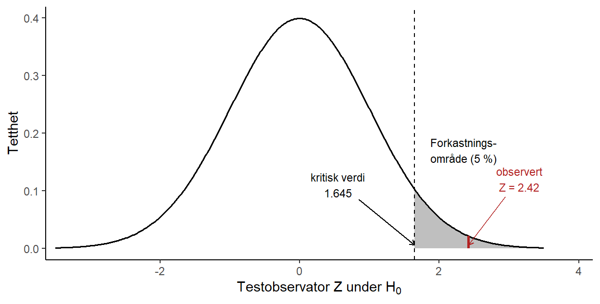
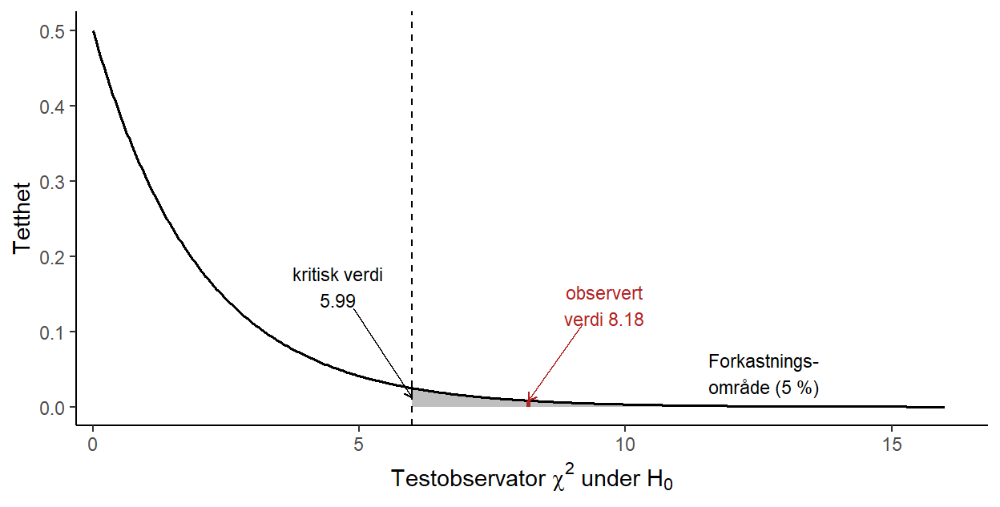
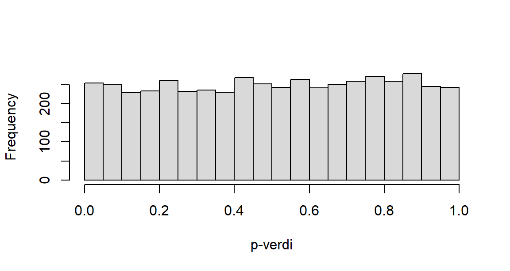

3 Hypotesetesting
Hypotesetesting er et klassisk tema i statistikk. Vi skal først lære generelt om hva det egentlig vil si å teste en hypotese ved hjelp av statistikk, og kanskje like viktig: hva statistisk hypotesetesting ikke er. Vi går så videre til å lære noen vanlige anvendelser og ser hvordan alt dette kan implementeres i R.
I videoforelesningene går vi gjennom noen slides, og vi skriver et R-skript. Du kan laste disse ned ved å klikke på lenkene under:
R-script til “Hypotesetesting”
TIPS: Hvis du ønsker å laste ned lysbildene som PDF trykker du på linken over, velger “Skriv ut”, og så skriver du ut som PDF. Før du gjør det bør du scrolle gjennom alle sidene slik at ligningene vises korrekt.
3.1 Generelt om hypotesetesting
Videoforelesninger
3.1.1 Hva er en hypotesetest?
En hypotese er en påstand eller antakelse som vi ønsker å undersøke. Vitenskapsfilosofen Karl Popper påpekte at gode hypoteser må være falsifiserbare: det må finnes tenkelige observasjoner som kan motbevise dem. Et viktig poeng følger av dette: at en hypotese ennå ikke er forkastet, betyr ikke at den er sann. Newtons fysikk sto uimotsagt i århundrer før Einstein viste at den bare var tilnærmet riktig.
Statistisk hypotesetesting bygger på denne tankegangen, men gjør den presis. En statistisk hypotese er en påstand om en ukjent størrelse i en populasjon, for eksempel om at et parti har oppslutning over sperregrensen, eller om at forventningen til en variabel er en bestemt verdi \(\mu_0\). Vi setter opp to konkurrerende hypoteser:
- Nullhypotesen \(H_0\) er utgangspunktet, ofte en «kjedelig» eller skeptisk påstand om at det ikke er noen effekt eller forskjell (partiet ligger på sperregrensen, medisinen virker ikke, forventningen er lik en bestemt verdi \(\mu_0\)).
- Alternativhypotesen \(H_A\) er det vi egentlig mistenker eller ønsker å påvise (partiet ligger over sperregrensen, medisinen virker, forventningen er forskjellig fra \(\mu_0\)).
Logikken er den samme som i en rettssak: den tiltalte antas uskyldig (\(H_0\)) helt til det motsatte er bevist. Vi antar at \(H_0\) er sann, og spør så: er dataene vi observerte overraskende dersom \(H_0\) er sann? Er de tilstrekkelig overraskende, forkaster vi \(H_0\) til fordel for \(H_A\). Er de ikke det, beholder vi \(H_0\), ikke fordi vi har bevist at den er sann, men fordi vi ikke har nok bevis til å forkaste den. Akkurat som en frifinnelse ikke er det samme som å bevise uskyld, «beviser» en hypotesetest aldri nullhypotesen.
3.1.2 Framgangsmåten steg for steg
En hypotesetest kan settes opp i fem steg, og de samme fem stegene gjelder for alle statistiske hypotesetester, uansett om vi tester en forventning, en andel, en forskjell mellom to grupper eller noe annet. De konkrete regnestykkene i steg 4 og 5 varierer fra test til test, men framgangsmåten er den samme. Vi følger stegene med et konkret eksempel: har partiet Venstre oppslutning over sperregrensen på 4 %?
- Formuler spørsmålet. Hva vil vi finne ut? Her: ligger den sanne oppslutningen \(p\) over 4 %?
- Sett opp hypotesene og velg signifikansnivå. Vi skriver spørsmålet som to hypoteser om populasjonsstørrelsen, og bestemmer på forhånd hvor sterkt beviset må være for at vi skal forkaste \(H_0\). Dette er signifikansnivået \(\alpha\), og valget er ingen ren formalitet: vi må veie hvor alvorlig det er å forkaste en sann \(H_0\) (en Type I-feil) mot at et for strengt nivå gjør det vanskeligere å fange opp en effekt som faktisk finnes. Vi ser nærmere på denne avveiningen i neste avsnitt. Her velger vi det vanlige nivået \(\alpha = 5\,\%\), og setter opp \(H_0: p = 0.04\) mot \(H_A: p > 0.04\).
- Samle data. Vi trekker et utvalg fra populasjonen. Vi spør 1000 tilfeldig valgte velgere, og 55 av dem sier de vil stemme partiet, altså en observert oppslutning på \(\widehat{p} = 55/1000 = 0.055\).
- Beregn testobservatoren. Vi oppsummerer dataene i én tallstørrelse, en testobservator, som tallfester hvor mye beviset taler mot \(H_0\). For en andel er den (vi kommer tilbake til formelen i neste delkapittel) \[Z = \frac{\widehat{p} - p_0}{\sqrt{p_0(1-p_0)/n}} = \frac{0.055 - 0.04}{\sqrt{0.04 \cdot 0.96/1000}} \approx 2.42.\] Legg merke til hvordan testobservatoren måler avviket mellom dataene og nullhypotesen. Telleren \(\widehat{p} - p_0\) er den rene differansen mellom det dataene sier (\(\widehat{p} = 0.055\)) og det nullhypotesen påstår (\(p_0 = 0.04\)). En slik differanse er vanskelig å tolke alene: er et avvik på 0.015 mye eller lite? Det avhenger av hvor mye \(\widehat{p}\) varierer fra utvalg til utvalg. Nevneren \(\sqrt{p_0(1-p_0)/n}\) er nettopp denne variasjonen, standardfeilen til \(\widehat{p}\) når \(H_0\) er sann. Ved å dele teller på nevner bytter vi enhet: avviket måles ikke lenger i andeler, men i antall standardfeil. At \(Z = 2.42\) betyr altså at den observerte andelen ligger 2.42 standardfeil over det nullhypotesen tilsier. Poenget med en testobservator er nettopp at vi kjenner fordelingen dens når \(H_0\) er sann, her standardnormalfordelingen, slik at vi kan avgjøre hvor overraskende en verdi som 2.42 er.
- Vurder signifikans og konkluder. Vi spør hvor overraskende testobservatoren er dersom \(H_0\) er sann. En verdi på 2.42 eller større har bare sannsynlighet omtrent 0.008 under standardnormalfordelingen. Det er mindre enn signifikansnivået på 5 %, så vi er tilstrekkelig overrasket: vi forkaster \(H_0\) og konkluderer med at partiet ser ut til å ligge over sperregrensen.
Steg 5 er kjernen, og «overrasket» har en presis betydning: er \(H_0\) sann, følger testobservatoren en kjent fordeling (en samplingfordeling), og vi kan regne ut hvor sannsynlig det er å få en verdi som er minst så ekstrem som den vi observerte. Er den sannsynligheten liten, betyr det nettopp at vi er overrasket: dataene er da vanskelige å forene med \(H_0\).
Det finnes to likeverdige måter å ta beslutningen i steg 5 på, og de gir alltid samme konklusjon. Begge tar utgangspunkt i fordelingen til testobservatoren under \(H_0\), som i Venstre-eksempelet er standardnormalfordelingen.
Forkastningsområdet er de verdiene av testobservatoren som skal få oss til å forkaste. Det velges direkte ut fra fordelingen og signifikansnivået: vi legger det i den halen (eller de halene) av fordelingen som svarer til \(H_A\), og gjør det akkurat stort nok til at sannsynligheten for å havne der er \(\alpha\) når \(H_0\) er sann. Grensen kalles den kritiske verdien. I Venstre-eksempelet er \(H_A\) ensidig (\(p > p_0\)), så hele forkastningsområdet ligger i høyre hale, og den kritiske verdien er 95-prosentilen i standardnormalfordelingen, \(z_{0.95} = 1.645\). Vi forkaster dersom \(Z > 1.645\), og siden den observerte verdien \(Z = 2.42\) ligger godt innenfor, forkaster vi (Figur 3.1).
p-verdien snur på det: i stedet for en fast grense regner vi ut hvor sannsynlig en testobservator minst så ekstrem som den observerte er under \(H_0\). Det er arealet til høyre for \(Z = 2.42\) i figuren, altså omtrent 0.008. Vi forkaster dersom p-verdien er mindre enn \(\alpha\). De to metodene er to sider av samme sak: den observerte verdien ligger i forkastningsområdet nettopp når p-verdien er mindre enn \(\alpha\).
3.1.3 Signifikansnivå og de to feiltypene
Hvor overrasket må vi være før vi forkaster? Her må vi ta stilling til at en test kan gå galt på to måter:
| Vår avgjørelse | \(H_0\) er sann | \(H_0\) er usann |
|---|---|---|
| Forkaster \(H_0\) | Type I-feil | Riktig |
| Beholder \(H_0\) | Riktig | Type II-feil |
En Type I-feil er å forkaste en sann nullhypotese (dømme en uskyldig). En Type II-feil er å beholde en usann nullhypotese (frikjenne en skyldig).
Signifikansnivået \(\alpha\) er den sannsynligheten vi på forhånd bestemmer oss for å godta for å gjøre en Type I-feil (vanligvis 5 %): \(\alpha = P(\text{forkaste } H_0 \mid H_0 \text{ er sann})\). Det sentrale poenget, som vi skylder statistikerne Jerzy Neyman og Egon Pearson, er at når vi fastsetter \(\alpha\) før testen, kontrollerer vi hvor ofte vi gjør Type I-feil: bruker vi prosedyren om og om igjen på situasjoner der \(H_0\) er sann, vil vi i det lange løp forkaste med urette i nøyaktig en andel \(\alpha\) av tilfellene. En enkelt test kan gå galt, men selve feilraten er garantert. Det er også \(\alpha\) som bestemmer hvor grensen for forkastningsområdet går, eventuelt hvor liten p-verdien må være før vi forkaster nullhypotesen: et 5 %-nivå legger forkastningsområdet der de 5 % mest ekstreme verdiene under \(H_0\) ligger, nettopp slik at vi havner der ved ren tilfeldighet bare 5 % av gangene. Hvor lavt vi bør sette \(\alpha\), avhenger av hvor alvorlig en Type I-feil er: jo mer det koster å forkaste en sann nullhypotese, jo strengere (lavere) feilrate bør vi kreve.
Sannsynligheten for en Type II-feil kaller vi \(\beta\). Styrken (power) til testen er \(1 - \beta\), altså sannsynligheten for at vi korrekt forkaster en usann nullhypotese. En sterk test er god til å oppdage en effekt når den faktisk finnes.
De to feiltypene trekker i hver sin retning: krymper vi forkastningsområdet (lavere \(\alpha\)), gjør vi Type I-feil sjeldnere, men Type II-feil oftere. Den eneste måten å redusere begge samtidig på er å samle inn mer data: en større \(n\) gir en mer presis testobservator, og tillater dermed både et lavt \(\alpha\) og høy styrke.
3.1.4 p-verdien
p-verdien er sannsynligheten for å observere en testobservator som er minst så ekstrem som den vi faktisk fikk, gitt at \(H_0\) er sann. En liten p-verdi betyr at dataene er svært overraskende under \(H_0\), og teller som bevis mot \(H_0\). Beslutningsregelen er enkel: vi forkaster \(H_0\) dersom \(p \leq \alpha\).
I Venstre-eksempelet over ga testobservatoren en p-verdi på omtrent 0.008. Siden den er mindre enn signifikansnivået vi valgte (\(\alpha = 0.05\)), forkaster vi \(H_0\), og konkluderer med at resultatet tyder på oppslutning over sperregrensen.
p-verdien er lett å mistolke, så merk deg hva den ikke er:
- Den er ikke sannsynligheten for at \(H_0\) er sann. p-verdien sier noe om dataene gitt \(H_0\), ikke om \(H_0\) gitt dataene.
- En stor p-verdi beviser ikke at \(H_0\) er sann; den betyr bare at dataene er forenlige med \(H_0\).
- «Statistisk signifikant» (\(p \leq \alpha\)) er ikke det samme som «viktig». Med et stort nok utvalg kan selv en ubetydelig forskjell bli statistisk signifikant.
3.1.5 Ensidige og tosidige tester
Uansett hvilken størrelse vi tester, kan alternativhypotesen peke i én eller begge retninger. La \(\theta\) stå for parameteren vi tester (en forventning, en andel, en differanse mellom to grupper, og så videre), og \(\theta_0\) for verdien nullhypotesen påstår:
- I en tosidig test er \(H_A: \theta \neq \theta_0\). Vi bryr oss om avvik i begge retninger, og forkastningsområdet legges i begge haler av fordelingen til testobservatoren.
- I en ensidig test er \(H_A: \theta > \theta_0\) (eller \(\theta < \theta_0\)), og hele forkastningsområdet legges i én hale. Venstre-eksempelet er ensidig: der er parameteren oppslutningen \(p\), og vi er bare interessert i om den er over sperregrensen.
Vi velger en ensidig test når bare avvik til den ene siden er beslutningsrelevant, eller når vi på forhånd kan utelukke den andre siden. Ellers bruker vi en tosidig test. Valget må tas før vi ser dataene, ikke etterpå for å presse fram det svaret vi ønsker oss.
3.1.6 Fallgruver ved hypotesetesting
Hypotesetesting er et kraftig verktøy, men også lett å misbruke. Tre fallgruver er verdt å kjenne til:
- Feiltolkning av p-verdien. Se listen over. Den amerikanske statistikkforeningen (ASA) har til og med gitt ut en egen uttalelse om hvor ofte p-verdien misforstås.
- Multippel testing. Tester vi mange hypoteser samtidig, vil noen «bli signifikante» ved ren tilfeldighet. Tester du 20 helt uvirksomme effekter på 5 %-nivå, forventer du å få omtrent ett «signifikant» funn bare av flaks. Veien fra multippel testing til (bevisst eller ubevisst) juks er kort, og et signifikant funn som er plukket ut i etterkant blant mange tester, er lite verdt.
- Forutsetningene. Testene hviler på antakelser (uavhengige observasjoner, en bestemt fordeling, stor nok \(n\)). Ofte er samplingfordelingen bare en tilnærming som støtter seg på sentralgrenseteoremet. Konklusjonen er ikke bedre enn forutsetningene den bygger på.
3.1.7 Kontrollspørsmål
Når du har vært gjennom stoffet, bør du kunne svare på følgende:
- Hva vil det si å gjennomføre en hypotesetest, og hvorfor kan vi aldri «bevise» nullhypotesen?
- Hva er forskjellen på en Type I-feil og en Type II-feil?
- Hva er signifikansnivået \(\alpha\), og hva har det med forkastningsområdet å gjøre?
- Hva er styrken til en test, og hvordan tolker du den?
- Hva er p-verdien, og hva er den ikke?
- Når bruker vi en ensidig test, og når en tosidig?
- Nevn minst én fallgruve ved hypotesetesting.
3.2 Inferens om en populasjon
Videoforelesninger
3.2.1 Hvilke størrelser kan vi teste?
Å gjøre inferens om én populasjon vil si å teste en hypotese om en enkelt ukjent parameter i populasjonen. Framgangsmåten er alltid den samme femstegsoppskriften fra forrige delkapittel; det som skifter fra test til test, er hvilken testobservator vi bruker, og hvilken fordeling den har under \(H_0\). De tre størrelsene vi oftest tester, er:
- forventningen \(\mu\) (populasjonsgjennomsnittet),
- en andel \(p\), og
- standardavviket \(\sigma\) (eller variansen \(\sigma^2\)), altså spredningen.
Vi går gjennom de tre i tur og orden. For hver av dem viser vi først hvordan testen gjøres manuelt, steg for steg med en kritisk verdi, og deretter hvordan R kan utføre hele testen direkte fra dataene.
3.2.2 Inferens om et gjennomsnitt
Vi vil teste om populasjonsgjennomsnittet er lik en bestemt verdi, altså \(H_0: \mu = \mu_0\). Fra samplingfordelingen til et gjennomsnitt (modul 2) vet vi at \(\overline{X}\) har forventning \(\mu\) og standardavvik \(\sigma/\sqrt{n}\). Dersom vi kjente \(\sigma\), kunne vi brukt testobservatoren
\[Z = \frac{\overline{X} - \mu_0}{\sigma/\sqrt{n}},\]
som er standardnormalfordelt når \(H_0\) er sann. I praksis kjenner vi sjelden det sanne standardavviket, så vi må estimere det med utvalgsstandardavviket \(s\). Denne ekstra usikkerheten gjør at testobservatoren
\[T = \frac{\overline{X} - \mu_0}{s/\sqrt{n}}\]
ikke lenger er normalfordelt, men t-fordelt med \(n-1\) frihetsgrader. Testobservatoren måler hvor mange (estimerte) standardfeil utvalgsgjennomsnittet ligger unna verdien \(\mu_0\) som nullhypotesen påstår. Ligger den langt unna null, taler dataene mot \(H_0\). Den kritiske verdien henter vi fra t-fordelingen (qt() i R). Testen kalles gjerne en t-test, og den hviler på at observasjonene kommer fra en tilnærmet normalfordelt populasjon, eller at \(n\) er stor nok til at sentralgrenseteoremet slår inn.
Eksempel. En bank oppgir at den gjennomsnittlige saksbehandlingstiden for en lånesøknad er 10 dager. En forbrukerorganisasjon mistenker at den egentlig er lengre, og gjennomfører en undersøkelse. Vi følger de fem stegene:
- Spørsmål: Er den forventede saksbehandlingstiden lengre enn 10 dager?
- Hypoteser og signifikansnivå: \(H_0: \mu = 10\) mot \(H_A: \mu > 10\) (ensidig). Vi må velge signifikansnivået på forhånd, og bør da veie inn hvor alvorlig en Type I-feil er. Her ville en Type I-feil være å hevde at banken er tregere enn den lover, uten at det er sant. Det er en påstand vi ikke vil komme med for lettvint, men konsekvensen er ikke dramatisk, så vi holder oss til det vanlige nivået \(\alpha = 5\,\%\).
- Data: Vi måler saksbehandlingstiden (i dager) for 40 tilfeldig valgte lånesøknader. Vi simulerer dataene, så du kan kjøre koden og få de samme tallene:
set.seed(3)
dager <- rnorm(40, mean = 11.2, sd = 3.3)- Testobservator: Vi kjenner ikke det sanne standardavviket, så vi bruker \(T = (\overline{X} - \mu_0)/(s/\sqrt{n})\), og regner den ut manuelt med R som kalkulator:
gj.snitt <- mean(dager) # utvalgsgjennomsnittet
s <- sd(dager) # utvalgsstandardavviket
n <- length(dager) # antall observasjoner
mu0 <- 10 # verdien fra nullhypotesen
T_obs <- (gj.snitt - mu0)/(s/sqrt(n))
T_obs[1] 2.329312- Kritisk verdi og konklusjon: Testobservatoren er t-fordelt med \(n - 1 = 39\) frihetsgrader. For en ensidig test på 5 %-nivå er den kritiske verdien 95-prosentilen \(t_{0.95,\,39}\) (se avsnittet om kritiske verdier i Seksjon 3.6):
qt(0.95, df = n - 1)[1] 1.684875Testobservatoren (2.33) er større enn den kritiske verdien (1.69), så den lander i forkastningsområdet. Vi forkaster \(H_0\) og konkluderer med at den forventede saksbehandlingstiden er lengre enn 10 dager.
Over gjorde vi testen manuelt, steg for steg. I R kan vi i stedet la t.test() gjøre hele jobben direkte fra dataene:
t.test(dager, mu = 10, alternative = "greater")
One Sample t-test
data: dager
t = 2.3293, df = 39, p-value = 0.01256
alternative hypothesis: true mean is greater than 10
95 percent confidence interval:
10.28011 Inf
sample estimates:
mean of x
11.01244 I utskriften er det særlig p-verdien du skal se på: er den mindre enn signifikansnivået vi valgte på forhånd (\(\alpha = 0.05\)), forkaster vi \(H_0\). Her er p-verdien 0.013, altså under 0.05, så vi forkaster, akkurat som med den kritiske verdien. Utskriften gir også selve testobservatoren (t), antall frihetsgrader (df) og et konfidensintervall for den forventede saksbehandlingstiden.
3.2.3 Inferens om en andel
Ofte er størrelsen vi er ute etter, en andel \(p\), for eksempel andelen kunder som misligholder et lån, eller andelen defekte enheter i en produksjon. Vi tester da \(H_0: p = p_0\). Fra samplingfordelingen til en andel (modul 2) vet vi at den observerte andelen \(\widehat{p}\) er tilnærmet normalfordelt for store utvalg. Under nullhypotesen er \(p = p_0\), så testobservatoren blir
\[Z = \frac{\widehat{p} - p_0}{\sqrt{p_0(1-p_0)/n}},\]
som er tilnærmet standardnormalfordelt når \(H_0\) er sann. Legg merke til at vi setter inn \(p_0\) (verdien fra nullhypotesen), ikke \(\widehat{p}\), i nevneren: standardfeilen regnes ut under forutsetning av at \(H_0\) er sann. Den kritiske verdien henter vi fra standardnormalfordelingen (qnorm()). Tilnærmingen er god når både \(np_0\) og \(n(1-p_0)\) er større enn omtrent 5.
Eksempel. En bank hevder at høyst 5 % av forbrukslånene deres blir misligholdt. En tilsynsmyndighet vil undersøke om den sanne misligholdsandelen er høyere.
- Spørsmål: Er den sanne misligholdsandelen \(p\) større enn 0.05?
- Hypoteser og signifikansnivå: \(H_0: p = 0.05\) mot \(H_A: p > 0.05\) (ensidig). En Type I-feil ville her være å konkludere med at banken bryter kravet når den egentlig oppfyller det, noe som kan utløse unødvendige tilsynstiltak mot en bank som følger reglene. Fordi en slik feilaktig anklage er alvorlig, krever vi sterke bevis og setter et strengt signifikansnivå, \(\alpha = 1\,\%\).
- Data: Tilsynet trekker 400 tilfeldige lån og finner at 30 av dem er misligholdt. Den observerte andelen er \(\widehat{p} = 30/400 = 0.075\).
- Testobservator: Under \(H_0\) er \(p_0 = 0.05\), så
\[Z = \frac{\widehat{p} - p_0}{\sqrt{p_0(1-p_0)/n}} = \frac{0.075 - 0.05}{\sqrt{0.05 \cdot 0.95/400}} \approx 2.29.\]
Regnet ut manuelt i R:
p.hatt <- 30/400
p0 <- 0.05
n <- 400
(p.hatt - p0)/sqrt(p0*(1 - p0)/n)[1] 2.294157- Kritisk verdi og konklusjon: Testobservatoren er tilnærmet standardnormalfordelt. For en ensidig test på 1 %-nivå er den kritiske verdien \(z_{0.99}\) (se Seksjon 3.6):
qnorm(0.99)[1] 2.326348Her er testobservatoren (2.29) mindre enn den kritiske verdien (2.33), så den lander ikke i forkastningsområdet, og vi kan ikke forkaste \(H_0\) på 1 %-nivå. Bevisene peker riktignok mot en høyere misligholdsandel, men de er ikke sterke nok til å møte det strenge kravet vi satte. (Med et vanlig 5 %-nivå ville vi forkastet, siden \(2.29 > 1.645\). Nettopp derfor må nivået velges før testen, ut fra konsekvensene.)
Over gjorde vi testen manuelt. I R kan vi bruke prop.test() direkte, med antall misligholdte lån, antall lån, verdien under \(H_0\) og retningen på testen:
prop.test(30, 400, p = 0.05, alternative = "greater", correct = FALSE)
1-sample proportions test without continuity correction
data: 30 out of 400, null probability 0.05
X-squared = 5.2632, df = 1, p-value = 0.01089
alternative hypothesis: true p is greater than 0.05
95 percent confidence interval:
0.05607821 1.00000000
sample estimates:
p
0.075 Igjen er det p-verdien du skal se på. Den er 0.011, altså større enn \(\alpha = 0.01\), så vi forkaster ikke \(H_0\). (prop.test() rapporterer en X-squared-verdi som rett og slett er \(Z^2\). Vi bruker correct = FALSE for å få nøyaktig samme test som den vi regnet ut for hånd.)
3.2.4 Inferens om et standardavvik
Noen ganger er det spredningen i seg selv vi vil teste, for eksempel om risikoen i en avkastningsserie er større enn en tillatt grense. Vi tester da \(H_0: \sigma = \sigma_0\) (likeverdig med \(\sigma^2 = \sigma_0^2\)), og bruker testobservatoren
\[\chi^2 = \frac{(n-1)s^2}{\sigma_0^2},\]
som under \(H_0\) følger en kji-kvadratfordeling (\(\chi^2\)-fordeling) med \(n-1\) frihetsgrader. En viktig forskjell fra \(Z\) og \(T\) er at kji-kvadratfordelingen ikke er symmetrisk: den lever bare på positive verdier og har en lang høyre hale. Derfor er de kritiske verdiene forskjellige i øvre og nedre hale, og vi må være ekstra nøye med hvilken hale forkastningsområdet skal ligge i. Kritiske verdier henter vi fra qchisq(). Denne testen er følsom for brudd på antakelsen om at populasjonen er normalfordelt.
Eksempel. Et aksjefond markedsfører seg med at risikoen, målt ved standardavviket til den månedlige avkastningen, er høyst 4 %. En analytiker vil teste om risikoen egentlig er høyere.
- Spørsmål: Er standardavviket \(\sigma\) til den månedlige avkastningen større enn 4 %?
- Hypoteser og signifikansnivå: \(H_0: \sigma = 4\) mot \(H_A: \sigma > 4\) (ensidig). En Type I-feil ville her være å beskylde fondet for høyere risiko enn det reklamerer med, uten grunnlag. Vi velger på forhånd et signifikansnivå på \(\alpha = 5\,\%\).
- Data: Analytikeren ser på de månedlige avkastningene (i prosent) fra de siste 30 månedene (simulert):
set.seed(1)
avkastning <- rnorm(30, mean = 0.8, sd = 5.6)- Testobservator: Vi bruker \(\chi^2 = (n-1)s^2/\sigma_0^2\) med \(\sigma_0 = 4\), og regner den ut manuelt i R:
s <- sd(avkastning) # utvalgsstandardavviket
n <- length(avkastning) # antall observasjoner
sigma0 <- 4 # standardavviket under H_0
chikvadrat <- (n - 1)*s^2/sigma0^2
chikvadrat[1] 48.54132- Kritisk verdi og konklusjon: Testobservatoren er kji-kvadratfordelt med \(n - 1 = 29\) frihetsgrader. Siden alternativet er \(\sigma > 4\), ligger forkastningsområdet i øvre hale, og den kritiske verdien er 95-prosentilen (se Seksjon 3.6):
qchisq(0.95, df = n - 1)[1] 42.55697Testobservatoren (48.5) er større enn den kritiske verdien (42.6), så vi forkaster \(H_0\): risikoen ser ut til å være høyere enn de annonserte 4 %.
I R finnes det ingen ferdig funksjon for denne testen slik som t.test() og prop.test(), så vi gjør den manuelt i R slik vi nettopp gjorde, direkte fra dataene. Vil du heller ha p-verdien enn å sammenligne med en kritisk verdi, finner du den som arealet i øvre hale med pchisq():
1 - pchisq(chikvadrat, df = n - 1)[1] 0.01290658p-verdien er 0.013, altså under \(\alpha = 0.05\), så konklusjonen er den samme: vi forkaster \(H_0\).
3.2.5 Kontrollspørsmål
- Hva tester vi i en ett-utvalgs t-test, og hvilke forutsetninger hviler den på?
- Hvorfor bruker vi t-fordelingen og ikke normalfordelingen når vi tester et gjennomsnitt uten å kjenne \(\sigma\)?
- Hvorfor setter vi inn \(p_0\) og ikke \(\widehat{p}\) i nevneren til testobservatoren for en andel?
- Hvorfor må vi være ekstra nøye med øvre og nedre kritisk verdi i en kji-kvadrattest for et standardavvik?
3.3 Inferens om to populasjoner
Videoforelesninger
3.3.1 Hvilke sammenligninger kan vi gjøre?
Ofte er vi ikke ute etter én populasjon, men vil sammenligne to: er avkastningen høyere i det ene fondet enn i det andre? Solgte vi mer etter en ombygging enn før? Framgangsmåten er den samme femstegsoppskriften som før, og igjen er det bare testobservatoren og fordelingen dens som skifter. De fire sammenligningene vi ser på, er:
- to forventninger fra uavhengige utvalg (to-utvalgs t-test),
- to forventninger fra matchede par (paret t-test),
- to varianser, og
- to andeler.
Som i forrige delkapittel viser vi for hver test først hvordan den gjøres manuelt, steg for steg med en kritisk verdi, og deretter hvordan R kan utføre hele testen direkte fra dataene.
3.3.2 To-utvalgs t-test
Når vi vil sammenligne forventningene i to uavhengige grupper, tester vi \(H_0: \mu_1 = \mu_2\) (altså at differansen \(\mu_1 - \mu_2\) er null) mot et av alternativene \(H_A: \mu_1 \neq \mu_2\) (tosidig), \(H_A: \mu_1 > \mu_2\) eller \(H_A: \mu_1 < \mu_2\) (ensidig). Testobservatoren er differansen mellom de to utvalgsgjennomsnittene, målt i antall standardfeil:
\[T = \frac{\overline{X}_1 - \overline{X}_2}{SE},\]
der \(SE\) er standardfeilen til differansen \(\overline{X}_1 - \overline{X}_2\). Når \(H_0\) er sann, er \(T\) t-fordelt, men hvordan vi regner ut \(SE\), og hvor mange frihetsgrader t-fordelingen har, avhenger av om vi antar at de to populasjonene har lik varians.
Her er \(s_1^2\) og \(s_2^2\) de to utvalgsvariansene og \(n_1\) og \(n_2\) de to utvalgsstørrelsene (antall observasjoner i hver gruppe).
Antar vi lik varians, estimerer vi den felles variansen ved å slå sammen (poole) de to utvalgsvariansene,
\[s_p^2 = \frac{(n_1-1)s_1^2 + (n_2-1)s_2^2}{n_1 + n_2 - 2},\]
og setter \(SE = s_p\sqrt{1/n_1 + 1/n_2}\). Testobservatoren \(T\) er da t-fordelt med \(n_1 + n_2 - 2\) frihetsgrader.
Antar vi ulik varians, bruker vi i stedet \(SE = \sqrt{s_1^2/n_1 + s_2^2/n_2}\), og \(T\) er tilnærmet t-fordelt med et frihetsgradstall \(\nu\) som regnes ut fra dataene med Welch-Satterthwaite-formelen
\[\nu = \frac{\left(s_1^2/n_1 + s_2^2/n_2\right)^2}{\left(s_1^2/n_1\right)^2/(n_1-1) + \left(s_2^2/n_2\right)^2/(n_2-1)}.\]
Dette kalles Welchs test, og er det R gjør som standard. I praksis lar vi som regel R regne ut \(\nu\) (den blir sjelden et helt tall).
Intuisjonen er den samme som i ett-utvalgstesten: ligger de to gjennomsnittene mange standardfeil fra hverandre, taler det mot at populasjonene har samme forventning.
Eksempel. En nettbutikk tester to versjoner (A og B) av forsiden, og måler ordreverdien (i kr) til kundene som ser hver versjon. Gir versjon B høyere gjennomsnittlig ordreverdi?
- Spørsmål: Er den forventede ordreverdien høyere for versjon B enn for versjon A?
- Hypoteser og signifikansnivå: \(H_0: \mu_B = \mu_A\) mot \(H_A: \mu_B > \mu_A\) (ensidig). En Type I-feil ville være å rulle ut versjon B i troen på at den er bedre, uten at den egentlig er det. En slik feil har liten konsekvens (i verste fall bytter vi til en side som ikke er noe bedre enn den gamle), så her tillater vi oss et mildere krav og velger \(\alpha = 10\,\%\).
- Data: 50 kunder ser hver versjon. Vi simulerer ordreverdiene:
set.seed(1)
A <- rnorm(50, mean = 480, sd = 110)
B <- rnorm(50, mean = 530, sd = 110)- Testobservator: Vi antar lik varians i de to gruppene og bruker den poolede testobservatoren. Vi lar R regne:
n1 <- length(B)
n2 <- length(A)
s_p <- sqrt(((n1 - 1)*var(B) + (n2 - 1)*var(A))/(n1 + n2 - 2))
T_obs <- (mean(B) - mean(A))/(s_p*sqrt(1/n1 + 1/n2))
T_obs[1] 2.611099- Kritisk verdi og konklusjon: Testobservatoren er t-fordelt med \(n_1 + n_2 - 2 = 98\) frihetsgrader. Kritisk verdi for en ensidig test på 10 %-nivå er 90-prosentilen \(t_{0.90,\,98}\) (se Seksjon 3.6):
qt(0.90, df = n1 + n2 - 2)[1] 1.29025Testobservatoren (2.61) er større enn den kritiske verdien (1.29), så vi forkaster \(H_0\): versjon B ser ut til å gi høyere ordreverdi.
Over gjorde vi testen manuelt. I R gjør t.test() hele jobben direkte fra dataene. Vi setter var.equal = TRUE fordi vi antok lik varians (uten det argumentet gjør R en Welch-test som ikke antar lik varians):
t.test(B, A, alternative = "greater", var.equal = TRUE, conf.level = 0.90)
Two Sample t-test
data: B and A
t = 2.6111, df = 98, p-value = 0.005221
alternative hypothesis: true difference in means is greater than 0
90 percent confidence interval:
26.23215 Inf
sample estimates:
mean of x mean of y
542.9059 491.0493 Se på p-verdien: den er 0.005, godt under signifikansnivået på 0.10, så vi forkaster \(H_0\). Merk at t.test() alltid ser på differansen mellom første og andre argument, så rekkefølgen (B, A) avgjør hva alternative = "greater" betyr.
3.3.3 t-test for matchede par
Noen ganger er de to utvalgene ikke uavhengige, men naturlig paret: vi måler den samme enheten to ganger (for eksempel før og etter et tiltak), eller vi matcher enheter parvis. Da ville en vanlig to-utvalgs t-test kaste bort informasjonen som ligger i paringen. Tenk deg at en butikkjede måler omsetningen i hver butikk før og etter en ombygging. Butikkene er svært ulike i utgangspunktet, noen store og noen små, så variasjonen i omsetning mellom butikkene er stor. En to-utvalgs t-test behandler «før» og «etter» som to uavhengige grupper, og da drukner den lille, systematiske endringen vi er ute etter, i den store variasjonen mellom butikkene.
Løsningen er å se på differansen innenfor hvert par. La \(x_{i1}\) og \(x_{i2}\) være de to måltallene for par nummer \(i\) (for eksempel omsetningen i butikk \(i\) før og etter ombyggingen), og se på differansen \(d_i = x_{i1} - x_{i2}\). Da sammenligner vi hver butikk med seg selv: forskjellene i størrelse mellom butikkene faller bort, og bare selve effekten (pluss litt måletilfeldighet) blir igjen. På differansene \(d_1, \ldots, d_n\) gjør vi så en helt vanlig ett-utvalgs t-test. Kaller vi den forventede differansen \(\mu_d\) (som er det samme som \(\mu_1 - \mu_2\)), tester vi \(H_0: \mu_d = 0\), med testobservator
\[T = \frac{\overline{d}}{s_d/\sqrt{n}},\]
t-fordelt med \(n-1\) frihetsgrader. Her er \(n\) antall par, \(\overline{d}\) gjennomsnittet av differansene og \(s_d\) utvalgsstandardavviket deres. Nøkkelspørsmålet er alltid: er de to måltallene paret (avhengige) eller uavhengige? Er de paret, bruker vi den parede testen.
Eksempel. En butikkjede bygger om 12 av butikkene sine og vil vite om ombyggingen økte ukesomsetningen. For hver butikk har vi omsetningen (i 1000 kr) før og etter ombyggingen. Siden det er de samme butikkene som måles to ganger, er dataene paret.
- Spørsmål: Økte den forventede omsetningen etter ombyggingen?
- Hypoteser og signifikansnivå: La \(d\) være differansen (etter minus før) for hver butikk. \(H_0: \mu_d = 0\) mot \(H_A: \mu_d > 0\) (ensidig). En Type I-feil ville være å konkludere med at ombyggingen økte omsetningen når den egentlig ikke gjorde det, og dermed anbefale den på sviktende grunnlag. Konsekvensen er verken ubetydelig eller dramatisk, så vi velger det vanlige nivået \(\alpha = 5\,\%\).
- Data: (simulert, én verdi før og én etter for hver av de 12 butikkene):
set.seed(1)
for_ombygging <- rnorm(12, mean = 200, sd = 50)
etter_ombygging <- for_ombygging + rnorm(12, mean = 15, sd = 18)- Testobservator: Vi regner ut de parvise differansene og gjør en ett-utvalgs t-test på dem:
d <- etter_ombygging - for_ombygging
T_obs <- mean(d)/(sd(d)/sqrt(length(d)))
T_obs[1] 2.665354- Kritisk verdi og konklusjon: Differansene gir \(n - 1 = 11\) frihetsgrader. Kritisk verdi for en ensidig test på 5 %-nivå er \(t_{0.95,\,11}\) (se Seksjon 3.6):
qt(0.95, df = length(d) - 1)[1] 1.795885Testobservatoren (2.67) er større enn den kritiske verdien (1.80), så vi forkaster \(H_0\): ombyggingen ser ut til å ha økt omsetningen.
Over gjorde vi testen manuelt på differansene. I R setter vi bare paired = TRUE i t.test(), så gjør den nøyaktig dette direkte fra de to seriene:
t.test(etter_ombygging, for_ombygging, paired = TRUE, alternative = "greater")
Paired t-test
data: etter_ombygging and for_ombygging
t = 2.6654, df = 11, p-value = 0.01099
alternative hypothesis: true mean difference is greater than 0
95 percent confidence interval:
5.075764 Inf
sample estimates:
mean difference
15.55973 p-verdien er 0.011, under 0.05, så vi forkaster \(H_0\). Hadde vi (feilaktig) brukt en vanlig to-utvalgs t-test her, ville vi kastet bort styrken som ligger i at de samme butikkene sammenlignes med seg selv.
3.3.4 Sammenligning av to varianser
Endelig kan vi sammenligne spredningen i to populasjoner, altså teste \(H_0: \sigma_1^2 = \sigma_2^2\) (like varianser). Her bruker vi forholdet mellom de to utvalgsvariansene som testobservator:
\[F = \frac{s_1^2}{s_2^2},\]
som under \(H_0\) følger en F-fordeling med \((n_1 - 1, n_2 - 1)\) frihetsgrader. Er de to variansene like, ligger \(F\) nær 1; er \(s_1^2\) mye større enn \(s_2^2\), blir \(F\) stor. Som kji-kvadratfordelingen er F-fordelingen asymmetrisk og lever bare på positive verdier.
Et nyttig triks er å alltid sette den største utvalgsvariansen i telleren. Da blir \(F > 1\), og vi trenger bare å sammenligne med den kritiske verdien i høyre hale av F-fordelingen, uansett om testen er ensidig eller tosidig (se Seksjon 3.6).
Eksempel. En investor vil vite om det ene av to fond har høyere risiko, målt ved standardavviket til den månedlige avkastningen, enn det andre. Vi har 30 månedlige avkastninger (i prosent) fra hvert fond.
- Spørsmål: Er standardavviket i avkastning større for fond 1 enn for fond 2?
- Hypoteser og signifikansnivå: \(H_0: \sigma_1^2 = \sigma_2^2\) mot \(H_A: \sigma_1^2 > \sigma_2^2\) (ensidig); dette er det samme som å teste om standardavviket \(\sigma_1\) er større enn \(\sigma_2\). En Type I-feil ville være å velge bort fond 1 som «for risikofylt» uten grunnlag. Vi velger \(\alpha = 5\,\%\).
- Data: (simulert):
set.seed(2)
fond1 <- rnorm(30, mean = 0.8, sd = 5.5)
fond2 <- rnorm(30, mean = 0.9, sd = 3.6)- Testobservator: \(F = s_1^2/s_2^2\). Her har fond 1 den største utvalgsvariansen, så vi setter den i telleren (jf. trikset over) og trenger bare å se på høyre hale:
F_obs <- var(fond1)/var(fond2)
F_obs[1] 2.443238- Kritisk verdi og konklusjon: \(F\) er F-fordelt med \((n_1 - 1, n_2 - 1) = (29, 29)\) frihetsgrader. Kritisk verdi for en ensidig test på 5 %-nivå er 95-prosentilen i F-fordelingen (se Seksjon 3.6):
qf(0.95, df1 = 29, df2 = 29)[1] 1.860811Testobservatoren (2.44) er større enn den kritiske verdien (1.86), så vi forkaster \(H_0\): fond 1 ser ut til å ha høyere risiko enn fond 2.
Over gjorde vi testen manuelt. I R gjør var.test() hele jobben direkte fra dataene:
var.test(fond1, fond2, alternative = "greater")
F test to compare two variances
data: fond1 and fond2
F = 2.4432, num df = 29, denom df = 29, p-value = 0.009461
alternative hypothesis: true ratio of variances is greater than 1
95 percent confidence interval:
1.312996 Inf
sample estimates:
ratio of variances
2.443238 p-verdien er 0.009, under 0.05, så vi forkaster \(H_0\). Utskriften gir også selve \(F\)-verdien og et konfidensintervall for forholdet mellom variansene.
3.3.5 Sammenligning av to andeler
Vil vi sammenligne to andeler, for eksempel konverteringsraten (andelen av dem som ser en annonse som faktisk handler) for to ulike annonser, tester vi \(H_0: p_1 = p_2\). Under nullhypotesen er de to andelene like, så vi slår sammen (pooler) dataene til ett felles estimat \(\widehat{p} = (x_1 + x_2)/(n_1 + n_2)\), der \(x_1\) og \(x_2\) er antall «suksesser» i de to gruppene. Testobservatoren er
\[Z = \frac{\widehat{p}_1 - \widehat{p}_2}{\sqrt{\widehat{p}(1-\widehat{p})\left(\frac{1}{n_1} + \frac{1}{n_2}\right)}},\]
som er tilnærmet standardnormalfordelt når \(H_0\) er sann.
Eksempel. Et selskap kjører to annonsekampanjer, A og B, og vil vite om B gir høyere konverteringsrate (andelen som handler). Av 500 som så kampanje A, handlet 45; av 500 som så kampanje B, handlet 68.
- Spørsmål: Er den sanne konverteringsraten høyere for B enn for A?
- Hypoteser og signifikansnivå: \(H_0: p_A = p_B\) mot \(H_A: p_B > p_A\) (ensidig). En Type I-feil ville være å satse videre på kampanje B i troen på at den er bedre, uten at den egentlig er det. En slik feil koster lite (i verste fall fortsetter vi med en kampanje som ikke er dårligere), så vi tillater et mildere nivå, \(\alpha = 10\,\%\).
- Data: \(\widehat{p}_A = 45/500 = 0.09\) og \(\widehat{p}_B = 68/500 = 0.136\).
- Testobservator: Under \(H_0\) pooler vi andelene: \(\widehat{p} = (45 + 68)/(500 + 500) = 0.113\). Regnet ut manuelt i R:
xA <- 45; nA <- 500
xB <- 68; nB <- 500
p.pool <- (xA + xB)/(nA + nB)
Z <- (xB/nB - xA/nA)/sqrt(p.pool*(1 - p.pool)*(1/nA + 1/nB))
Z[1] 2.297348- Kritisk verdi og konklusjon: For en ensidig test på 10 %-nivå er den kritiske verdien \(z_{0.90}\) (se Seksjon 3.6):
qnorm(0.90)[1] 1.281552Siden testobservatoren (2.30) er større enn den kritiske verdien (1.28), forkaster vi \(H_0\): kampanje B ser ut til å ha høyere konverteringsrate.
Over gjorde vi testen manuelt. I R kan vi bruke prop.test() med vektorer av antall suksesser og antall forsøk:
prop.test(c(xB, xA), c(nB, nA), alternative = "greater", correct = FALSE)
2-sample test for equality of proportions without continuity correction
data: c(xB, xA) out of c(nB, nA)
X-squared = 5.2778, df = 1, p-value = 0.0108
alternative hypothesis: greater
95 percent confidence interval:
0.01315198 1.00000000
sample estimates:
prop 1 prop 2
0.136 0.090 p-verdien er 0.011, under \(\alpha = 0.10\), så vi forkaster \(H_0\). (Igjen er X-squared lik \(Z^2\), og correct = FALSE gir samme test som håndregningen.)
3.3.6 Kontrollspørsmål
- Når bruker vi en to-utvalgs t-test, og når en paret t-test?
- Hva er forskjellen på å anta lik og ulik varians i en to-utvalgs t-test, og hva gjør R som standard?
- Hvilken fordeling bruker vi når vi sammenligner to varianser, og hvordan ser testobservatoren ut?
- Hvorfor slår vi sammen (pooler) de to andelene under \(H_0\) når vi sammenligner to andeler?
3.4 Kjikvadrattester
Videoforelesninger
3.4.1 Hva tester vi med kji-kvadrat?
De to foregående delkapitlene handlet om tallstørrelser (gjennomsnitt, andeler, varianser). Kji-kvadrattester handler i stedet om antall: vi teller hvor mange observasjoner som faller i hver kategori, og sammenligner de observerte antallene (\(f\)) med hvor mange vi ville forventet (\(e\)) dersom en bestemt påstand var sann. Er avviket mellom observert og forventet stort nok, forkaster vi påstanden. Det samlede avviket måler vi med testobservatoren
\[\chi^2 = \sum \frac{(f - e)^2}{e},\]
som er tilnærmet kji-kvadratfordelt (\(\chi^2\)) når \(H_0\) er sann. Hvert ledd \((f - e)^2/e\) vokser jo lengre det observerte antallet ligger fra det forventede, så en stor \(\chi^2\)-verdi betyr at dataene passer dårlig med \(H_0\). Tilnærmingen er god når alle de forventede antallene er større enn omtrent 5.
Vi ser på to anvendelser:
- Goodness-of-fit: passer en foreslått sannsynlighetsfordeling over noen kategorier med dataene?
- Uavhengighet: er to kategoriske kjennetegn uavhengige av hverandre?
3.4.2 Test av en sannsynlighetsmodell (goodness-of-fit)
Anta at hver observasjon havner i én av \(k\) kategorier, og at nullhypotesen sier at sannsynlighetene for kategoriene er \(p_1, \ldots, p_k\). Har vi \(n\) observasjoner, forventer vi da \(e_i = n\,p_i\) i kategori \(i\). Testobservatoren \(\chi^2 = \sum_{i=1}^k (f_i - e_i)^2/e_i\) er kji-kvadratfordelt med \(k - 1\) frihetsgrader når \(H_0\) er sann, og vi forkaster for store verdier.
Eksempel. To konkurrerende selskaper, A og B, hadde før to reklamekampanjer markedsandeler på henholdsvis 45 % og 40 %, mens 15 % foretrakk andre selskaper. Etter kampanjene vil et analysebyrå vite om andelene har endret seg.
- Spørsmål: Har fordelingen av markedsandeler (45 %, 40 %, 15 %) endret seg?
- Hypoteser og signifikansnivå: \(H_0: (p_A, p_B, p_{\text{andre}}) = (0.45, 0.40, 0.15)\) mot \(H_A\): minst én av andelene er forskjellig. En Type I-feil ville være å konkludere med at andelene har endret seg når de egentlig ikke har det. Konsekvensen er moderat, så vi velger \(\alpha = 5\,\%\).
- Data: Et tilfeldig utvalg på 200 kunder fordeler seg slik: 102 foretrekker A, 82 foretrekker B, og 16 foretrekker et annet selskap.
- Testobservator: Under \(H_0\) forventer vi \(e_i = 200\,p_i\), altså 90, 80 og 30. Vi regner ut \(\chi^2\) i R:
f <- c(102, 82, 16) # observerte antall
p0 <- c(0.45, 0.40, 0.15) # andeler under H0
e <- sum(f)*p0 # forventede antall: 90, 80, 30
chikvadrat <- sum((f - e)^2/e)
chikvadrat[1] 8.183333- Kritisk verdi og konklusjon: Med \(k = 3\) kategorier er testobservatoren kji-kvadratfordelt med \(k - 1 = 2\) frihetsgrader. Kritisk verdi på 5 %-nivå er 95-prosentilen (se Seksjon 3.6):
qchisq(0.95, df = 2)[1] 5.991465Testobservatoren (8.18) er større enn den kritiske verdien (5.99), så vi forkaster \(H_0\) (Figur 3.2): markedsandelene ser ut til å ha endret seg. Ser vi på leddene, kommer det meste av avviket fra «andre»-kategorien (16 observert mot 30 forventet), så det ser ut til at kampanjene har trukket kunder bort fra de andre selskapene.

I R gjør chisq.test() hele jobben når vi gir den de observerte antallene og andelene under \(H_0\):
chisq.test(x = f, p = p0)
Chi-squared test for given probabilities
data: f
X-squared = 8.1833, df = 2, p-value = 0.01671Se på p-verdien: den er 0.017, altså under 0.05, så vi forkaster \(H_0\), akkurat som med den kritiske verdien. Utskriften gir også X-squared (testobservatoren) og df.
3.4.3 Test for uavhengighet
Ofte vil vi vite om to kategoriske kjennetegn henger sammen, for eksempel om holdning til innvandring henger sammen med politisk ståsted. Vi ordner da dataene i en krysstabell med \(r\) rader og \(s\) kolonner, der \(f_{ij}\) er antallet observasjoner som havner i rad \(i\) og kolonne \(j\):
| Kol. 1 | Kol. 2 | \(\cdots\) | Kol. \(s\) | Sum | |
|---|---|---|---|---|---|
| Rad 1 | \(f_{11}\) | \(f_{12}\) | \(\cdots\) | \(f_{1s}\) | \(f_{1\cdot}\) |
| Rad 2 | \(f_{21}\) | \(f_{22}\) | \(\cdots\) | \(f_{2s}\) | \(f_{2\cdot}\) |
| \(\vdots\) | \(\vdots\) | \(\vdots\) | \(\ddots\) | \(\vdots\) | \(\vdots\) |
| Rad \(r\) | \(f_{r1}\) | \(f_{r2}\) | \(\cdots\) | \(f_{rs}\) | \(f_{r\cdot}\) |
| Sum | \(f_{\cdot 1}\) | \(f_{\cdot 2}\) | \(\cdots\) | \(f_{\cdot s}\) | \(n\) |
Her er \(f_{i\cdot}\) radsummene, \(f_{\cdot j}\) kolonnesummene og \(n\) det totale antallet observasjoner. Vi tester \(H_0\): de to kjennetegnene er uavhengige, mot \(H_A\): de henger sammen.
De forventede antallene bygger på produktregelen for uavhengige begivenheter: er to begivenheter \(A\) og \(B\) uavhengige, er sannsynligheten for at begge inntreffer produktet av sannsynlighetene, \(P(A \cap B) = P(A)\,P(B)\). Er de to kjennetegnene uavhengige, gjelder det samme for cellene: sannsynligheten for at en observasjon havner i rad \(i\) og kolonne \(j\) er produktet av rad-sannsynligheten og kolonne-sannsynligheten. Estimerer vi disse med rad- og kolonneandelene \(f_{i\cdot}/n\) og \(f_{\cdot j}/n\), blir det forventede antallet i celle \((i,j)\)
\[e_{ij} = n \cdot \frac{f_{i\cdot}}{n} \cdot \frac{f_{\cdot j}}{n} = \frac{f_{i\cdot}\, f_{\cdot j}}{n}.\]
Testobservatoren er den samme som før, \(\chi^2 = \sum (f_{ij} - e_{ij})^2/e_{ij}\), nå kji-kvadratfordelt med \((r-1)(s-1)\) frihetsgrader.
Eksempel. I en stor spørreundersøkelse er 30 568 respondenter plassert etter politisk ståsted på en skala fra 1 (venstre) til 11 (høyre), og etter hvor mange innvandrere de mener bør få slippe inn i landet (mange, noen, få, ingen). Henger de to kjennetegnene sammen? Dataene ligger i immigration-wide.xls.
- Spørsmål: Er holdning til innvandring uavhengig av politisk ståsted?
- Hypoteser og signifikansnivå: \(H_0\): de to kjennetegnene er uavhengige, mot \(H_A\): de henger sammen. En Type I-feil ville være å hevde at det finnes en sammenheng når det egentlig ikke gjør det. Vi velger \(\alpha = 5\,\%\).
- Data: Vi leser inn krysstabellen. Den har 11 rader (politisk ståsted, 1-11) og 4 kolonner (holdning):
library(readxl)
immigration <- read_xls("immigration-wide.xls",
range = "B2:E12",
col_names = c("many", "some", "few", "none"))
print(immigration, n = 11)# A tibble: 11 × 4
many some few none
<dbl> <dbl> <dbl> <dbl>
1 301 366 238 171
2 167 220 143 107
3 435 647 352 190
4 724 1269 695 306
5 515 1378 809 320
6 1084 4087 3170 1599
7 327 1354 1143 431
8 327 1403 1276 482
9 180 927 1009 473
10 38 232 333 190
11 84 329 371 366- Testobservator: Å regne ut alle de \(11 \cdot 4 = 44\) forventede celletallene for hånd er tungvint, så vi lar
chisq.test()gjøre hele jobben:
chisq.test(immigration)
Pearson's Chi-squared test
data: immigration
X-squared = 1814.6, df = 30, p-value < 2.2e-16- Kritisk verdi og konklusjon: Med \(r = 11\) og \(s = 4\) er testobservatoren kji-kvadratfordelt med \((r-1)(s-1) = 30\) frihetsgrader. Kritisk verdi på 5 %-nivå er
qchisq(0.95, df = 30)[1] 43.77297Testobservatoren (X-squared \(\approx 1815\)) er enormt mye større enn den kritiske verdien (43.8), og p-verdien er forsvinnende liten, så vi forkaster \(H_0\): holdning til innvandring henger klart sammen med politisk ståsted.
Testen hviler på at ingen av de forventede celletallene er for små (under omtrent 5). Den forutsetningen kan vi sjekke ved å hente ut de forventede antallene direkte fra testen:
chisq.test(immigration)$expected many some few none
[1,] 147.2073 429.8650 335.7748 163.15297
[2,] 87.1478 254.4833 198.7812 96.58777
[3,] 222.1790 648.7925 506.7828 246.24575
[4,] 409.6083 1196.1112 934.3027 453.97769
[5,] 413.4390 1207.2973 943.0404 458.22331
[6,] 1359.8888 3971.0573 3101.8601 1507.19380
[7,] 445.3157 1300.3814 1015.7500 493.55290
[8,] 477.1924 1393.4656 1088.4596 528.88249
[9,] 354.2004 1034.3126 807.9191 392.56788
[10,] 108.4901 316.8057 247.4623 120.24192
[11,] 157.3312 459.4282 358.8671 174.37353Alle de forventede antallene er godt over 5 (det minste er omtrent 87), så tilnærmingen er pålitelig her.
3.4.4 Kontrollspørsmål
- Hva er de to anvendelsene av kji-kvadrattesten?
- Hvordan regner vi ut de forventede antallene i hvert av de to tilfellene?
- Hvor mange frihetsgrader har testobservatoren for en goodness-of-fit-test med \(k\) kategorier, og for en uavhengighetstest på en \(r \times s\)-tabell?
- Hvorfor krever testen at de forventede celletallene ikke er for små?
3.5 Oppgaver
3.5.1 Teorioppgaver
- For hvert av scenarioene i a og b, gjør følgende:
- Sett opp relevant nullhypotese og alternativhypotese (hint: nullhypotesen avhenger av hvor «bevisbyrden» bør ligge).
- Definer type I- og type II-feil.
- Diskuter konsekvensene av type I-feil og type II-feil i det aktuelle scenarioet.
- Diskuter hvilket signifikansnivå du ville valgt, og begrunn valget ut fra konsekvensene av de to feiltypene.
En ny type medisin skal vurderes for kommersialisering. Du sitter i et vurderingspanel som skal vurdere om medisinen kan bli godkjent eller ikke.
Du blir presentert to ulike investeringer å velge mellom. En av dem er veldig risikabel, men med stor potensiell profitt. Den andre er mindre risikabel, men med lavere potensiell profitt.
Løsning
- \(H_0\): Den nye medisinen er ikke trygg og effektiv. \(H_A\): Den nye medisinen er trygg og effektiv. Type I-feil: Forkaste \(H_0\) når \(H_0\) er sann. Konsekvens: Risikerer at vi begynner å produsere en medisin som ikke er trygg og effektiv. Type II-feil: Forkaster ikke \(H_0\) når \(H_A\) er sann. Konsekvens: Vi lar være å produsere en medisin som faktisk er trygg og effektiv.
Signifikansnivå: En type I-feil (en utrygg medisin når markedet) er svært alvorlig, så vi bør kreve sterke bevis før vi forkaster \(H_0\). Derfor settes signifikansnivået lavt, gjerne 1 % eller lavere.
- \(H_0\): Den mest risikable investeringen er mest lønnsom. \(H_A\): Den mest risikable investeringen er ikke mest lønnsom. Type I-feil: Forkaste \(H_0\) når \(H_0\) er sann. Konsekvens: Vi investerer i den minst risikable investeringen, som ikke er mest lønnsom. Type II-feil: Forkaster ikke \(H_0\) når \(H_A\) er sann. Konsekvens: Vi investerer i den mest risikable investeringen, som ikke er mest lønnsom.
Signifikansnivå: Her er begge feiltypene omtrent like alvorlige (i begge tilfeller ender vi opp i en mindre lønnsom investering), og konsekvensene er rent økonomiske. Et vanlig nivå på 5 % er da et rimelig valg. Poenget er at valget bør begrunnes ut fra konsekvensene, ikke tas på autopilot.
Vi har følgende hypoteser og informasjon om dataene: \(H_0: \mu = 150\) mot \(H_A: \mu \neq 150\). Utvalgsstandardavviket er \(s = 10\), \(n = 100\) og \(\overline{x} = 150\).
Bestem verdien av testobservatoren, forkastningsområdet dersom signifikansnivået er \(\alpha = 0.05\), og p-verdien. Konkluder.
Løsning
Vi kjenner ikke det sanne standardavviket \(\sigma\), så vi bruker en t-observator med \(n - 1 = 99\) frihetsgrader. Forkastningsområdet for en tosidig test på 5 %-nivå er \(T < -t_{0.025,\,99} = -1.98\) eller \(T > t_{0.025,\,99} = 1.98\).
\[T = \frac{\overline{x} - \mu_0}{s/\sqrt{n}} = \frac{150 - 150}{10/\sqrt{100}} = 0.\]
p-verdien i en tosidig test. I en tosidig test teller både store positive og store negative verdier av \(T\) som bevis mot \(H_0\), fordi avvik i begge retninger er interessante. Vi spør derfor hvor sannsynlig det er å få en testobservator som er minst så langt fra null som den vi observerte, altså \(|T| \geq |T_{obs}|\). Ved symmetri er dette to like store haler: \[\text{p-verdi} = P(|T| \geq |T_{obs}|) = 2\,P(T \geq |T_{obs}|).\] Her er \(T_{obs} = 0\), så p-verdien blir \(2\,P(T \geq 0) = 2 \times 0.5 = 1\). Vi kan altså ikke forkaste \(H_0\). Faktisk finnes det ingen observasjon som er mer forenlig med \(H_0: \mu = 150\) enn den vi fikk, siden utvalgsgjennomsnittet er nøyaktig 150. (I R finner du \(P(T \geq t)\) med
1 - pt(t, df = 99).)
Vi har følgende hypoteser og informasjon om dataene: \(H_0: \mu = 55\) mot \(H_A: \mu > 55\). Utvalgsstandardavviket er \(s = 20\), \(n = 25\) og \(\overline{x} = 67\).
Regn ut testobservatoren \(T\).
Regn ut p-verdien.
Regn ut p-verdien, denne gangen med \(\overline{x} = 63\).
Regn ut p-verdien, denne gangen med \(\overline{x} = 59\).
Fastslå hva som skjer med verdien av testobservatoren og p-verdien når \(\overline{x}\) nærmer seg \(55\) (verdien av \(\mu\) under \(H_0\)).
Løsning
Vi kjenner ikke det sanne standardavviket \(\sigma\), så vi bruker en t-observator med \(n - 1 = 24\) frihetsgrader.
\[T = \frac{\overline{x} - \mu_0}{s/\sqrt{n}} = \frac{67 - 55}{20/\sqrt{25}} = 3.\]
\(\text{p-verdi} = P(T > 3) = 1 - P(T < 3) = 0.0031\). (I R:
1 - pt(3, df = 24).)Ny testobservator: \(T = (63 - 55)/(20/\sqrt{25}) = 2\). \(\text{p-verdi} = P(T > 2) = 0.0285\).
Ny testobservator: \(T = (59 - 55)/(20/\sqrt{25}) = 1\). \(\text{p-verdi} = P(T > 1) = 0.164\).
Vi ser at testobservatoren minker og p-verdien øker når \(\overline{x}\) nærmer seg \(55\).
Forklaring: La \(\mu_0 = 55\) være verdien av \(\mu\) under \(H_0\). Testobservatoren måler avviket mellom det \(H_0\) påstår og det dataene viser, og avtar derfor når \(\overline{x}\) nærmer seg \(\mu_0\). P-verdien sier hvor sannsynlig det er å observere noe minst så ekstremt som det vi har, dersom \(H_0\) er sann, og øker følgelig når \(\overline{x}\) nærmer seg \(\mu_0\).
En leder frykter at den gjennomsnittlige tiden ansatte daglig bruker på sosiale medier overstiger 45 minutter. For å teste denne mistanken plukker han ut et tilfeldig utvalg på 15 personer og spør om tid brukt på sosiale medier etter en tilfeldig arbeidsdag. Resultatene (i minutter) er:
70, 96, 58, 88, 34, 42, 34, 56, 68, 46, 26, 18, 22, 60, 84Anta at tidene er tilnærmet normalfordelt. Kan lederen hevde at mistanken hans stemmer på et 1 %-signifikansnivå?
Tror du observasjonene over er et representativt utvalg? Hva kunne lederen gjort annerledes?
Løsning
- Lederen ønsker å teste \(H_0: \mu = 45\) mot \(H_A: \mu > 45\). Vi kjenner ikke det sanne standardavviket, så vi bruker en t-test med \(n - 1 = 14\) frihetsgrader. Fra de 15 observasjonene regner vi ut utvalgsgjennomsnittet \(\overline{x} = 53.47\) og utvalgsstandardavviket \(s = 24.55\) (i R:
mean()ogsd()). Testobservatoren er\[T = \frac{\overline{x} - \mu_0}{s/\sqrt{n}} = \frac{53.47 - 45}{24.55/\sqrt{15}} = 1.34.\]
p-verdien er \(P(T > 1.34) \approx 0.10\) (i R:
1 - pt(1.34, df = 14)), altså langt over 0.01. Alternativt er den kritiske verdien \(t_{0.01,\,14} = 2.62\), og siden \(1.34 < 2.62\) kan vi ikke forkaste. Lederen kan altså ikke trekke denne konklusjonen på 1 %-signifikansnivå.
- Dersom lederen spør ansatte ansikt til ansikt, er det nærliggende å tro at de vil underdrive sin bruk av sosiale medier. En anonym spørreundersøkelse ville nok gitt et mer representativt utvalg.
Gjennomsnitt og standardavvik i et utvalg på \(n=100\) er \(\overline{x} = 20\) og \(s = 2\).
Finn 95 % konfidensintervall av gjennomsnitt (\(\mu\)) i populasjonen.
Gjenta a. med \(s = 5\).
Gjenta a. med \(s = 10\).
Fastslå hvordan det estimerte konfidensintervallet endrer seg når vi øker \(s\).
Anta at \(s=5\) og regn et 95 % konfidensintervall dersom størrelsen på utvalget er henholdsvis \(n = 50\) og \(n=10\).
Fastlå hvordan det estimerte konfidensintervallet endrer seg når vi øker \(n\).
Løsning
\[\overline{x} \pm t_{\alpha/2, n - 1}s/\sqrt{n} = 20 \pm 1.984\times 2/\sqrt{100} = [19.60 ,20.40]\]
\[ 20 \pm 1.984\times 5/\sqrt{100} = [19.01 ,20.99]\]
\[ 20 \pm 1.984\times 10/\sqrt{100} = [18.02 ,21.98]\]
Konfidensintervallet blir større når \(s\) øker.
\[\overline{x} \pm t_{\alpha/2, n - 1}s/\sqrt{n} = 20 \pm 2.09\times 5/\sqrt{50} = [18.58 ,21.42]\] \[\overline{x} \pm t_{\alpha/2, n - 1}s/\sqrt{n} = 20 \pm 2.26\times 5/\sqrt{10} = [16.42 ,23.58]\]
Vi ser at jo større \(n\) er jo mindre blir konfidensintervallet. Flere observasjoner gjør at vi med større sikkerhet (smalere intervall) kan si hvor \(\mu\) ligger.
- Et flyselskap har historisk landet presis (i rute) 92 % av flyreisene sine. Etter at selskapet innførte et nytt system for logistikk og ruteplanlegging, vil de undersøke om punktligheten har blitt bedre. I et tilfeldig utvalg på 165 flyreiser etter innføringen ble 156 vurdert som presise. Kan vi konkludere på 5 % signifikansnivå at andelen presise flyreiser har økt?
Løsning
La \(p\) være den sanne andelen presise flyreiser etter innføringen av det nye systemet. Vi tester \(H_0: p = 0.92\) mot \(H_A: p > 0.92\). Estimatet er \(\hat{p} = 156/165 \approx 0.945\), og testobservatoren er
\[z = \frac{\hat{p} - p_0}{\sqrt{p_0(1 - p_0)/n}} = \frac{0.945 - 0.92}{\sqrt{0.92(1 - 0.92)/165}} \approx 1.18.\]
Forkastningsområdet er \(z > 1.645\), og siden \(z < 1.645\) kan vi ikke forkaste \(H_0\). Alternativt regner vi ut p-verdien, sannsynligheten for å observere noe minst så positivt som 1.18 til fordel for \(H_A\):
\[\text{p-verdi} = P(Z > 1.18) = 1 - P(Z < 1.18) \approx 0.12,\]
og vi kan derfor ikke forkaste \(H_0\), siden p-verdien ikke er mindre enn 0.05. (I R: \(P(Z < 1.18)\) =
pnorm(1.18).)
- Vi har følgende informasjon fra to tilfeldige utvalg fra to ulike normalfordelte populasjoner: \(\overline{x}_1 = 400\), \(s_1 = 130\), \(n_1 = 130\), \(\overline{x}_2 = 390\), \(s_2 = 50\), \(n_2 = 130\).
- Kan vi hevde på et 5 % signifikansnivå at \(\mu_1\) er større enn \(\mu_2\)? Det oppgis at
\[\nu = \frac{\left(\frac{s^2_{1}}{n_1} + \frac{s^2_{2}}{n_2}\right)^2}{\left(\frac{s^2_{1}}{n_1}\right)^2/(n_1 - 1) + \left(\frac{s^2_{2}}{n_2}\right)^2/(n_2 - 1)}\approx 166\]
Gjenta a., denne gangen med \(s_1 = 30\) og \(s_2 = 15\). Som over, oppgis det at \(\nu \approx 190\).
Fastslå hva som skjer hvis utvalgenes standardavvik blir mindre.
Gjenta a., denne gangen med utvalg på \(n_1 = n_2 = 20\) observasjoner. Som over, oppgis det at \(\nu \approx 28\).
Fastslå effekten av å redusere utvalgsstørrelser.
Løsning
- Vi skal altså teste \(H_0: \mu_1 = \mu_2\) mot \(H_A: \mu_1 > \mu_2\). Siden variansene i utvalget er såpass ulike antar vi at vi må bruke varianten av testen med ulik varians. Testobservatoren er da gitt ved
\[T = \frac{\overline{x}_1 - \overline{x}_2 - 0}{\sqrt{\frac{s^2_{1}}{n_1} + \frac{s^2_{2}}{n_2}}}=\frac{400 - 390}{\sqrt{\frac{130^2}{130} + \frac{50^2}{130}}} = 0.82\] Antall frihetsgrader oppgis til å være \(v \approx 166\). Vi forkaster \(H_0\) dersom \(T > t_{0.05, 166} = 1.654\), og siden dette ikke er tilfelle her kan vi ikke forkaste \(H_0\) ved 5 % signifikansnivå.
- Testobservatoren blir i dette tilfellet
\[T = \frac{\overline{x}_1 - \overline{x}_2 - 0}{\sqrt{\frac{s^2_{1}}{n_1} + \frac{s^2_{2}}{n_2}}}=\frac{400 - 390}{\sqrt{\frac{30^2}{130} + \frac{15^2}{130}}} = 3.40\] Antall frihetsgrader oppgis til å være \(v \approx 190\). Siden \(T = 3.40 > t_{0.05, 190} = 1.653\) forkaster vi \(H_0\) på 5 % signifikansnivå.
Når standardavvikene i utvalgene blir mindre øker verdien av testobservatoren. Mindre standardavvik betyr at vi er mer sikre på at \(\overline{x}_1 - \overline{x}_2\) ligger nær \(\mu_1 - \mu_2\), og at en evt. differanse kan tyde på avvik fra \(H_0\). Dette blir reflektert av en større testobservator.
Testobservatoren blir da
\[T = \frac{\overline{x}_1 - \overline{x}_2 - 0}{\sqrt{\frac{s^2_{1}}{n_1} + \frac{s^2_{2}}{n_2}}}=\frac{400 - 390}{\sqrt{\frac{130^2}{20} + \frac{50^2}{20}}} = 0.32\] Antall frihetsgrader oppgis til å være \(v \approx 28\). Vi forkaster \(H_0\) dersom \(T > t_{0.05, 28} = 1.701\), og siden dette ikke er tilfelle her kan vi ikke forkaste \(H_0\) ved 5 % signifikansnivå.
- Få observasjoner representerer større usikkerhet om differansen \(\overline{x}_1 - \overline{x}_2\) bare skyldes tilfeldighet, og dette reflekteres av testobservatoren som vil synke når utvalgsstørrelsen reduseres.
Et nystartet firma har utviklet to løsninger for automatisk registrering av av antall lus på oppdrettslaks. Metode A er litt dyrere enn metode B, men firmaet mener Metode A en den raskeste metoden. For å teste ut denne hypotesen blir begge metodene brukt til å registrere lus på 11 basseng av ulik størrelse og med forskjellig antall fisk. Antall minutter hver metode tar blir registrert for hvert basseng.
- Under er det gitt en R-utskrift fra en to-utvalgs t-test. Still opp nullhypotesen og den alternative hypotesen i samsvar med R-utskriften. Bruk også utskriften til å formulere en konklusjon for en test med 5% signifikansnivå.
Welch Two Sample t-test
data: metodeB and metodeA
t = 1.6129, df = 18.969, p-value = 0.06164
alternative hypothesis: true difference in means is greater than 0
95 percent confidence interval:
-0.7959228 Inf
sample estimates:
mean of x mean of y
83.44886 72.41662 - Under er det gitt en R-utskrift fra en paret t-test for de samme dataene. Still opp nullhypotesen og den alternative hypotesen i samsvar med R-utskriften. Formuler testobservatoren og bruk også utskriften til å formulere en konklusjon for en test med 5% signifikansnivå.
Paired t-test
data: metodeB and metodeA
t = 5.4477, df = 10, p-value = 0.0001409
alternative hypothesis: true mean difference is greater than 0
95 percent confidence interval:
7.361811 Inf
sample estimates:
mean difference
11.03225 - Hvilke av de to foregående testene bør en bruke i dette tilfellet?
Løsning
- La \(\mu_1\) og \(\mu_2\) være forventet tid til registrering av lus i et basseng for hhv. metode B og metode A. Da er R-utskriften en test av \(H_0: \mu_1 = \mu_2\) mot det ensidige alternativet \(H_A: \mu_1 > \mu_2\). Fra utskriften ser vi at \(p\text{-value} = 0.06164 > 0.05\), altså kan vi ikke forkaste \(H_0\) ved \(5\,\%\) signifikansnivå.
Praktisk tolkning: Vi kan ikke konkludere med at det er noen forskjell i tiden de to metodene bruker.
- I en paret t-test baserer testen seg på de parvise differansene \(d_i = x_{i1} - x_{i2}\), der \(x_{i1}\) og \(x_{i2}\) er tiden hhv. metode B og metode A bruker på å registrere lus i basseng nr. \(i\). Utskriften viser en test av \(H_0: \mu_d = 0\) mot det ensidige alternativet \(H_A: \mu_d > 0\). Testobservatoren er da gitt ved
\[T=\frac{\overline{d}-0}{s_d/\sqrt{n}}\]
Fra utskriften ser vi at \(p-value= 0.0001409 < 0.05\), altså kan vi forkaste \(H_0\) ved \(5\%\) signifikansnivå.
Praktisk tolkning: Det ser ut til at metode A er raskere enn metode B.
- En paret t-test er generelt det riktige valget dersom observasjonene som blir “paret” er avhengige. I dette tilfellet er det naturlig å tro at tiden metode A og B bruker på et basseng er avhengige størrelser (f.eks vil et basseng med mye fisk ta lang tid å registrere for begge metodene). I en to-utvalgs t-test antar vi derimot at tiden det tar for metode A og B å registrere lus for et basseng er uavhengige.
Vi har følgende informasjon fra to tilfeldige utvalg fra to ulike normalfordelte populasjoner: \(s_{1}^2 = 1400\), \(n_1 = 60\), \(s_{2}^2 = 700\), \(n_2 = 60\).
Kan vi hevde at de to utvalgene har ulik varians? Bruk 5 % signifikansnivå.
Gjenta a., denne gangen med \(n_1 = 30\) og \(n_2 = 30\).
Fastslå hva som er effekten på verdi av testobservator og konklusjon av testen når vi reduserer utvalgsstørrelse.
Løsning
- Her ønsker vi å test \(H_0: \sigma_{1}^2/\sigma_{2}^2 = 1\) mot \(H_A: \sigma_{1}^2/\sigma_{2}^2 \neq 1\). Husk at for en tosidig test er det smart å formulere null- og alternativ hypotesen slik at den største utvalgsvariansen kommer i telleren til testobservatoren:
\[F = s_{1}^2/s_{2}^2 = 1400/700 = 2\]
Da trenger vi nemlig kun å sammenligne testobservatoren med den øvre kvantilen i F-fordelingen. Forkastningsområdet blir i dette tilfellet \(F > F_{0.025, 59, 59} = 1.67\). Siden \(F = 2\) er større enn \(1.67\) kan vi altså forkaste \(H_0\) til fordel for \(H_A\) på et 5 % signifikansnivå.
- Forkastningsområdet er da \(F > F_{0.025, 29, 29} = 2.1\) og siden \(F < 2.1\) kan vi ikke forkaste \(H_0\) på et 5 % signifikansnivå.
- Testobservatoren forblir uendret, men vi ser at den kritiske verdien som må overstiges for å få forkastning øker når antall observasjoner avtar. Konklusjonen blir derfor motsatt i oppgave b. Skulle vi fått forkastning også i b. måtte det reduserte utvalget blitt kompensert av et større avvik mellom \(s_1\) og \(s_2\).
- En bedrift som har en dyr leieavtale av en parkeringsplass vurderer innkjøp av elektroniske sparkesykler. Tanken er at de som bor nær bedriften da kan benytte seg av disse istedenfor å kjøre bil. I et prøveprosjekt får bedriften leid en rekke sparkesykler i 20 arbeidsdager og antall biler på parkeringsplassen blir registrert daglig. Den samme registreringen blir gjort de 20 påfølgende arbeidsdagene når sparkesyklene ikke er tilgjengelig. En ansatt som er ansvarlig for prøveprosjektet bruker R til å utføre to tester basert på data fra disse to registreringene.
Formuler null- og alternativhypotesen til den første testen. Hvorfor utfører den ansatte denne testen?
Formuler null- og alternativhypotesen samt testobservatoren til den andre testen. Trekk en praktisk konklusjon om innføringen av sparkesykler ut fra utskriften.
F test to compare two variances
data: uten_sparkesykkel and med_sparkesykkel
F = 1.5385, num df = 19, denom df = 19, p-value = 0.3559
alternative hypothesis: true ratio of variances is not equal to 1
95 percent confidence interval:
0.6089665 3.8870052
sample estimates:
ratio of variances
1.538524
Two Sample t-test
data: uten_sparkesykkel and med_sparkesykkel
t = 2.4621, df = 38, p-value = 0.009232
alternative hypothesis: true difference in means is greater than 0
95 percent confidence interval:
2.525173 Inf
sample estimates:
mean of x mean of y
39.91587 31.90524 Løsning
- La \(\sigma^2_{1}\) og \(\sigma^2_{2}\) være populasjonsvariansene til antall biler som kommer for å parkere på henholdsvis dager der sparkesykler ikke er tilgjengelig og dager der sparkesykler er tilgjengelig. Utskriften viser da en test av \(H_0: \sigma^2_{1}/\sigma^2_{2} = 1\) mot \(H_A: \sigma^2_{1}/\sigma^2_{2} \neq 1\).
Den ansatte utfører denne testen for å se om han kan bruke varianten av to-utvalgs t-test som antar lik varians når vedkommende tester om innføringen av sparkesykler har noen effekt (se b.). Ut fra p-verdien på 0.3559 (altså ingen forkastning av \(H_0\)) vil det være greit å bruke en slik test i dette tilfellet.
Tips: variabel navnet som står først i testen (“uten_sparkesykkel”) indikerer hvilke av de to variansen som står i telleren av \(\sigma^2_{1}/\sigma^2_{2}\) (i \(H_0\)) og \(s^2_{1}/s^2_{2}\) (i testobservatoren) i testen R utfører.
- La \(\mu_1\) og \(\mu_2\) være forventet antall biler på henholdsvis dager der sparkesykler ikke er tilgjengelig og dager der sparkesykler er tilgjengelig. Utskriften viser en ensidig, to-utvalgs t-test av hypotesen \(H_0: \mu_1 = \mu_2\) mot \(H_A: \mu_1 > \mu_2\). \(H_A\) sier altså at det forventes færre biler på dager med sparkesykler enn på dager uten sparkesykler.
“Two sample t-test” betyr at vi har antatt lik varians (ellers ville det stått “Welch two sample t-test”), og testobservatoren er derfor gitt ved:
\[T = \frac{\overline{x}_1 - \overline{x}_2 - 0}{\sqrt{s^2_{P}(1/n_1 + 1/n_2)}}\]
der \[s^2_{P} = \frac{(n_1 - 1)s^2_{1} + (n_2 - 1)s^2_{2}}{n_1 + n_2 -2}\]
Ut fra p-verdien på 0.009232 forkaster vi \(H_0\) på 1 % (!) signifikansnivå. Vi har med andre ord god grunn til å tro at en innføring av sparkesykler vil redusere antall biler på parkeringsplassen.
Tips: Variabelnavnet som står først (“uten_sparkesykkel”) indikerer hva som er første verdi i differansene \(\mu_1 - \mu_2\) (i hypotesene) og \(\overline{x}_1 - \overline{x}_2\) (i testobservatoren) i testen R utfører.
- Vi har følgende informasjon om fra to tilfeldige utvalg fra to populasjoner: I utvalg 1 har \(x_1 = 100\) av \(n_1 = 200\) individer et spesielt kjennetegn, mens i utvalg 2 er det det tilsvarende tallet \(x_2 = 90\) av \(n_2 = 200\).
Utfør en test for å undersøke om de to populasjonene har ulik andel av kjennetegnet. Bruk 5 % signifikansnivå.
Regn ut p-verdien for testen over.
Gjenta a., denne gangen med \(x_1 = 190\) og \(x_2 = 180\). Fastslå effekten på p-verdien av å øke andelene (dersom differansen er uendret).
Løsning
- Vi skal her teste hypotesen \(H_0: p_1 = p_2\) mot \(H_A: p_1 \neq p_2\). Med \(\hat{p_1} = 100/200 = 0.5\), \(\hat{p}_2 = 90/200 = 0.45\) og \(\hat{p} = (100 + 90)/(200 + 200) = 0.475\) er testobservatoren er gitt ved
\[Z = \frac{\hat{p}_1 - \hat{p}_2}{\sqrt{\hat{p}(1-\hat{p})(1/n_1 + 1/n_2)}} = \frac{0.5 - 0.45}{\sqrt{0.475(1-0.475)(1/200 + 1/200)}}=1.00\]
Siden dette er en tosidig test er forkastningsområdet til testen \(|Z| > z_{\alpha/2} = z_{0.025}=1.96\). Siden 1 < 1.96 kan vi altså ikke forkaste \(H_0\) ved 5 % signifikansnivå.
- P-verdier for tosidige tester kan være litt tricky å forstå. Vi er altså ute etter sannsynligheten for at noe “minst like ekstremt og til fordel for \(H_A\) intreffer”. For en tosidig test ville vi også reagert på store negative verdier av \(Z\), og “minst like ekstremt” i negativ retning ville vært \(Z < - 1.00\). Altså blir p-verdien
\[\text{P-value} = P(Z < -1.00\quad \text{og/eller}\quad Z > 1.00)\\ = P(Z < -1.00) + P(Z > 1.00) = 2P(Z > 1.00) = 2*(1 - 0.841) = 0.317\]
- Regner på nytt ut \(\hat{p}_1 = 0.95, \hat{p}_2 = 0.90, \hat{p} = 0.925\). Testobservatoren er da gitt ved
\[Z = \frac{\hat{p}_1 - \hat{p}_2}{\sqrt{\hat{p}(1-\hat{p})(1/n_1 + 1/n_2)}} = \frac{0.95 - 0.90}{\sqrt{0.925(1-0.925)(1/200 + 1/200)}}=1.89\]
P-verdien er som før gitt ved
\[ \text{P-value} = 2P(Z > 1.89) = 2*(1 - 0.97) = 0.06 \]
Vi ser at p-verdien avtar når andelene blir større. Vi er her ganske nære på å forkaste \(H_0\) selv om differansen mellom \(\hat{p}_1\) og \(\hat{p}_2\) er den samme som i oppgave a. I nevneren til testobservatoren ser vi at variansen til differansen \(\hat{p}_1 - \hat{p}_2\) er proposjonal med \(\hat{p}(1-\hat{p})\). Denne vil bli mindre når \(\hat{p}\) nærmer seg 1 (eller 0), og er størst når \(\hat{p} = 0.5\). Vi er derfor sikrere på at differansen \(\hat{p}_1 - \hat{p}_2\) i oppgave b. ligger nær den sanne differansen i populasjon sammenlignet med oppgave a. Bevismateriale mot \(H_A\) øker (p-verdien går ned), men i dette tilfellet holder det ikke til å forkaste \(H_0\).
- En kredittutsteder gir kundene en rating basert på blant annet gjeld, formue og tidligere betalingsanmerkninger. Tanken er at en lav rating medfører høyere sannsynlighet mislighold av lånet sitt. For å sjekke om ratingen gir en reell indikasjon på mislighold, blir det registrert antall mislighold i et utvalg med rating under 800, og i et utvalg med rating 800 eller høyere.
| Rating < 800 | Rating > 800 | |
|---|---|---|
| Utvalgsstørrelse | 612 | 854 |
| Mislighold | 14 | 9 |
Kan vi konkludere med at personer med rating lavere enn 800 har høyere sannsynlighet for mislighold av lånet sitt sammenlignet med de med rating over 800? Bruk 5 % signifikansnivå.
Løsning
La \(p_1\) være sannsynlighet for mislighold for de med rating under 800 og la \(p_2\) være den samme sannsynligheten for de med rating over 800. Vi skal da teste \(H_0: p_1 = p_2\) mot det ensidige alternativet \(H_A: p_1 > p_2\). Med \(\hat{p_1} = 14/612 = 0.0229\), \(\hat{p}_2 = 0.0105\), og \(\hat{p}=(14 + 9)/(612 + 854)=0.0157\) er testobservatoren gitt ved
\[Z = \frac{\hat{p}_1 - \hat{p}_2}{\sqrt{\hat{p}(1-\hat{p})(1/n_1 + 1/n_2)}} = \frac{0.0229 - 0.0105}{\sqrt{0.0157(1-0.0157)(1/612 + 1/854)}}=1.874\]
Forkastningsområdet er gitt ved \(Z > z_\alpha = 1.645\), og siden 1.874 > 1.645 forkaster vi \(H_0\). Det er grunn til å tro at personer med rating lavere enn 800 har større sannsynlighet for mislighold.
(Eksamen vår 2024.) En analytiker deler de månedlige avkastningene til S&P 500-indeksen i to grupper: måneder klassifisert som normal risiko og måneder klassifisert som høy risiko. Utvalgene er oppsummert slik:
Gruppe Gjennomsnitt Standardavvik \(s\) Antall \(n\) Normal risiko 5.52 4.83 231 Høy risiko 0.68 8.60 162 Test på 5 %-nivå om variansen i avkastning er den samme i de to gruppene.
Test på 5 %-nivå om den forventede avkastningen er den samme i de to gruppene. Bruk resultatet fra a til å avgjøre hvilken variant av to-utvalgs t-testen du skal bruke.
Løsning
- Vi tester \(H_0: \sigma_1^2 = \sigma_2^2\) mot \(H_A: \sigma_1^2 \neq \sigma_2^2\) (tosidig). Vi setter den største variansen i telleren, altså høy-risiko-gruppen:
\[F = \frac{s_1^2}{s_2^2} = \frac{8.60^2}{4.83^2} = 3.17.\]
Forkastningsområdet i øvre hale er \(F > F_{0.025,\,161,\,230} = 1.33\) (fra
qf(0.975, df1 = 161, df2 = 230)). Siden \(3.17 > 1.33\) forkaster vi \(H_0\): variansene er forskjellige.
- Fordi a viste ulik varians, bruker vi varianten med ulik varians (Welch). Vi tester \(H_0: \mu_1 = \mu_2\) mot \(H_A: \mu_1 \neq \mu_2\):
\[T = \frac{\overline{x}_1 - \overline{x}_2}{\sqrt{s_1^2/n_1 + s_2^2/n_2}} = \frac{0.68 - 5.52}{\sqrt{8.60^2/162 + 4.83^2/231}} = -6.48.\]
Utvalgene er store, så den kritiske verdien er tilnærmet \(z_{0.025} = 1.96\). Siden \(|-6.48| = 6.48 > 1.96\) forkaster vi \(H_0\): den forventede avkastningen er forskjellig i de to gruppene (og lavest i høy-risiko-månedene).
- (Eksamen vår 2025.) I et atferdseksperiment skal deltakerne rapportere om de gjettet riktig i et terningspill, der en riktig gjetning gir en liten belønning (det er ingen kontroll av om de snakker sant). En kontrollgruppe får ingen ekstra informasjon, mens en tillitsgruppe først får lese en tekst som understreker at forskerne stoler på dem. Av 400 i tillitsgruppen rapporterte 116 en riktig gjetning, mot 181 av 400 i kontrollgruppen. Kan vi konkludere med at «tillits-teksten» reduserer andelen som rapporterer en (mistenkelig ofte) riktig gjetning? Bruk 1 %-signifikansnivå.
Løsning
La \(p_1\) og \(p_2\) være andelene som rapporterer riktig gjetning i henholdsvis tillitsgruppen og kontrollgruppen. Vi tester \(H_0: p_1 = p_2\) mot det ensidige alternativet \(H_A: p_1 < p_2\). Estimatene er \(\widehat{p}_1 = 116/400 = 0.29\) og \(\widehat{p}_2 = 181/400 = 0.4525\), og den poolede andelen er \(\widehat{p} = (116 + 181)/(400 + 400) = 0.371\). Testobservatoren er
\[Z = \frac{\widehat{p}_1 - \widehat{p}_2}{\sqrt{\widehat{p}(1-\widehat{p})(1/n_1 + 1/n_2)}} = \frac{0.29 - 0.4525}{\sqrt{0.371(1-0.371)(1/400 + 1/400)}} = -4.76.\]
Forkastningsområdet er \(Z < z_{0.01} = -2.33\) (fra
qnorm(0.01)). Siden \(-4.76 < -2.33\) forkaster vi \(H_0\): tillits-teksten ser ut til å redusere andelen som rapporterer en riktig gjetning. En naturlig tolkning er at teksten fikk færre til å jukse.
- En nettbutikk vil undersøke om antall bestillinger fordeler seg jevnt over ukedagene (mandag til fredag), eller om noen dager er travlere enn andre. I en tilfeldig valgt uke registreres antall bestillinger per dag:
| Dag | Man | Tir | Ons | Tor | Fre |
|---|---|---|---|---|---|
| Bestillinger | 95 | 110 | 100 | 130 | 165 |
Test på 5 %-signifikansnivå om bestillingene fordeler seg jevnt over de fem ukedagene.
Løsning
Er bestillingene jevnt fordelt, er sannsynligheten den samme for hver dag, altså \(p_i = 1/5\) for alle fem dagene. Vi tester \(H_0: p_1 = p_2 = \cdots = p_5 = 1/5\) mot \(H_A:\) minst én av andelene er forskjellig, på 5 %-nivå. Med totalt \(n = 600\) bestillinger er det forventede antallet per dag \(e_i = 600 \cdot 1/5 = 120\). Testobservatoren regnes ut slik:
| Dag | \(f_i\) | \(e_i\) | \((f_i - e_i)^2/e_i\) |
|---|---|---|---|
| Man | 95 | 120 | 5.208 |
| Tir | 110 | 120 | 0.833 |
| Ons | 100 | 120 | 3.333 |
| Tor | 130 | 120 | 0.833 |
| Fre | 165 | 120 | 16.875 |
| Sum | 600 | 600 | \(\chi^2 = 27.08\) |
Testobservatoren er kji-kvadratfordelt med \(k - 1 = 4\) frihetsgrader, og forkastningsområdet er \(\chi^2 > \chi^2_{0.05,\,4} = 9.49\). Siden \(27.08 > 9.49\) forkaster vi \(H_0\): bestillingene fordeler seg ikke jevnt over ukedagene. Det største bidraget kommer fra fredag (165 mot 120 forventet), så fredag ser ut til å være spesielt travel.
- Et produksjonsselskap har mulighet til å bruke tre forskjellige kjemikalier for å fremstille det samme produktet. Lederen ved produksjonsselskapet ønsker å undersøke hvorvidt det er forskjell på hvor mange mangelfulle produkter som blir produsert når en varierer bruken av type kjemikalier. Hun gjør et tilfeldig utvalg på 700 produkter og klassifiserer dem som enten tilfredsstillende eller mangelfull. Funnene er oppsummert i tabellen nedenfor:
| Klassifisering | Kjemikalie 1 | Kjemikalie 2 | Kjemikalie 3 | Sum |
|---|---|---|---|---|
| Tilfredsstillende | 268 | 216 | 164 | 648 |
| Mangelfull | 15 | 17 | 20 | 52 |
| Sum | 283 | 233 | 184 | 700 |
Utfør en test for å avgjøre om det er en sammenheng mellom mangelfulle produkter og kjemikalie brukt under produksjonen. Bruk 5 % signifikansnivå.
Løsning
Vi skal altså teste \(H_0:\) de to kjennetegnene klassifisering og kjemikalie er uavhengige mot \(H_A:\) de er avhengige. Vi begynner med å regne ut de forventede frekvensene ved bruk av formelen \(e_{ij} = f_{i\cdot}f_{\cdot j}/n\):
| klas./kjem. | Kjem 1 | Kjem 2 | Kjem 3 |
|---|---|---|---|
| Tilfreds. | \(e_{11} = 648\cdot 283/700 = 262.0\) | \(e_{12} = 648\cdot 233/700 = 215.7\) | \(e_{13} = 648\cdot 184/700 = 170.3\) |
| Mangel. | \(e_{21} = 52\cdot 283/700 = 21.0\) | \(e_{22} = 52\cdot 233/700 = 17.3\) | \(e_{23} = 52\cdot 184/700 = 13.7\) |
Så regner vi ut hvert ledd \((f_{ij} - e_{ij})^2/e_{ij}\) som skal inn i summen til testobservatoren:
| klas./kjem. | Kjem 1 | Kjem 2 | Kjem 3 |
|---|---|---|---|
| Tilfreds. | \((268 - 262.0)^2/262 = 0.1384\) | 0.0004 | 0.2353 |
| Mangel. | 1.7255 | 0.0055 | 2.9327 |
Testobservatoren er da gitt ved
\[\chi^2 = \sum_{i=1}^2\sum_{j=1}^3 (f_{ij} - e_{ij})^2/e_{ij} = 0.1385 + 0.0004 + 0.2352 + 1.7255 + 0.0055 + 2.9327 = 5.0378.\]
Forkastningsområdet er \(\chi^2 > \chi^2_{\alpha,\,(r-1)(s-1)} = \chi^2_{0.05,\,2} = 5.99\). Siden \(\chi^2 = 5.0378 < 5.99\) forkaster vi ikke \(H_0\) på 5 %-signifikansnivå.
I R ville vi gjort følgende:
f = matrix(c(268, 216, 164, 15, 17, 20), nrow = 2, ncol = 3, byrow = T)
chisq.test(f)
Pearson's Chi-squared test
data: f
X-squared = 5.038, df = 2, p-value = 0.080543.5.2 Nøtter
Nøtt 1. En analytiker leter etter en «markedsslående» handelsstrategi og tester 20 forskjellige strategier, hver mot \(H_0:\) strategien gir ingen meravkastning, på 5 %-nivå. Anta at alle de 20 strategiene i virkeligheten er verdiløse (alle nullhypotesene er sanne), og at testene er uavhengige.
Hva er sannsynligheten for at minst én av strategiene blir «signifikant» og altså feilaktig utropt til en vinner?
Analytikeren presenterer stolt den ene strategien som ble signifikant. Hvorfor bør vi være skeptiske?
Anta at vi vil holde sannsynligheten for minst én Type I-feil på tvers av alle 20 testene nede på 5 %. Hvor lavt må vi da sette signifikansnivået for hver enkelt test? (Dette kalles en Bonferroni-korreksjon.)
Løsning
- Hver test forkaster med sannsynlighet \(\alpha = 0.05\) når \(H_0\) er sann, så den beholder \(H_0\) med sannsynlighet \(0.95\). Siden testene er uavhengige, er sannsynligheten for at ingen av dem blir signifikant \(0.95^{20}\), og dermed \[P(\text{minst én signifikant}) = 1 - 0.95^{20} = 0.64.\] Det er altså mer sannsynlig enn ikke at vi får minst ett «funn», selv om alt vi tester er ren støy.
- Nettopp fordi et signifikant funn er så sannsynlig når vi tester mange hypoteser, sier ett signifikant resultat plukket ut blant 20 nesten ingenting. Dette er fallgruven multippel testing: jo flere tester, jo lettere er det å finne noe «signifikant» ved ren flaks. Vi burde fått vite hvor mange strategier som ble testet, og helst sett strategien bekreftet på nye, uavhengige data.
- Vil vi at \(P(\text{minst én Type I-feil}) \leq 0.05\), kan vi (litt konservativt) dele signifikansnivået på antall tester: \(\alpha^* = 0.05/20 = 0.0025\). Da kreves mye sterkere bevis i hver enkelt test, og prisen er lavere styrke.
Nøtt 2. En randomisert studie undersøker om det å vinne i et skattefradrags-lotteri påvirker hvor mange timer folk jobber per uke. På et lite tilfeldig utvalg gir en to-utvalgs t-test testobservator \(T = 1.44\), som ikke er signifikant på 5 %-nivå. Forskerne gjentar så nøyaktig samme test på hele populasjonen, som er omtrent 3000 ganger så stor. Den estimerte forskjellen mellom vinnere og ikke-vinnere er praktisk talt den samme, cirka 3.35 timer i uken.
Testobservatoren for et gjennomsnitt (eller en differanse) kan skrives som effekt delt på en standardfeil, og standardfeilen krymper proporsjonalt med \(1/\sqrt{n}\). Hvis forskjellen og standardavvikene er uendret, hva blir omtrent den nye testobservatoren når \(n\) blir 3000 ganger større?
Den nye p-verdien er forsvinnende liten. Betyr det at effekten er «viktigere» i den store studien enn i den lille?
Hva er lærdommen om forholdet mellom statistisk signifikans og praktisk (økonomisk) betydning?
Løsning
- Siden standardfeilen er proporsjonal med \(1/\sqrt{n}\), vokser testobservatoren proporsjonalt med \(\sqrt{n}\) når effekten holdes fast. Å gjøre \(n\) 3000 ganger større ganger testobservatoren med \(\sqrt{3000} \approx 55\): \[T_{\text{ny}} \approx 1.44 \cdot \sqrt{3000} \approx 79.\] En slik verdi gir en p-verdi som i praksis er null.
- Nei. Den estimerte effekten er den samme (cirka 3.35 timer); det eneste som har endret seg, er at vi er mye sikrere på at den ikke er null. En liten p-verdi betyr «svært lite forenlig med at effekten er nøyaktig null», ikke «stor effekt».
- Med et stort nok utvalg blir selv en ubetydelig forskjell statistisk signifikant. Statistisk signifikans svarer på om en effekt finnes, ikke på om den er stor nok til å bety noe. En forskjell på 3.35 timer (nær 10 % av en normal arbeidsuke) er økonomisk betydelig i seg selv, uansett p-verdi, og det er vurderingen som teller for beslutninger. Statistisk signifikans og praktisk betydning er to forskjellige spørsmål.
Nøtt 3. En analytiker har regnet ut et 95 %-konfidensintervall for den forventede månedlige avkastningen \(\mu\) til et fond, og får \([0.3\,\%,\ 1.7\,\%]\). Uten å regne ut noen testobservator skal du svare på følgende:
Kan vi forkaste \(H_0: \mu = 0\) mot \(H_A: \mu \neq 0\) på 5 %-nivå?
Kan vi forkaste \(H_0: \mu = 2\,\%\) mot \(H_A: \mu \neq 2\,\%\) på 5 %-nivå?
Forklar den generelle regelen som knytter et \((1-\alpha)\)-konfidensintervall til en tosidig test på nivå \(\alpha\).
Løsning
- Verdien \(0\) ligger utenfor intervallet \([0.3\,\%, 1.7\,\%]\), så vi forkaster \(H_0: \mu = 0\). Dataene er ikke forenlige med at den forventede avkastningen er null.
- Verdien \(2\,\%\) ligger også utenfor intervallet, så vi forkaster \(H_0: \mu = 2\,\%\) på samme måte.
- Regelen er en dualitet: et \((1-\alpha)\)-konfidensintervall består nettopp av alle verdiene \(\mu_0\) som ikke ville blitt forkastet av en tosidig test på nivå \(\alpha\). Ligger \(\mu_0\) innenfor intervallet, beholder vi \(H_0: \mu = \mu_0\); ligger den utenfor, forkaster vi. Et konfidensintervall er derfor en kompakt oppsummering av alle tosidige tester på én gang.
Nøtt 4. To forskere vil teste den samme effekten, \(H_0: \mu = 0\) mot \(H_A: \mu > 0\), der den sanne verdien i virkeligheten er \(\mu = 0.5\) (målt i antall populasjonsstandardavvik, så \(\sigma = 1\)). Forsker A samler \(n = 10\) observasjoner, forsker B samler \(n = 100\). Begge bruker 5 %-nivå. For enkelhets skyld antar vi \(\sigma\) kjent, så testobservatoren er \(Z = \overline{X}/(1/\sqrt{n})\) og vi forkaster når \(Z > 1.645\).
Vis at forsker A forkaster \(H_0\) dersom \(\overline{X} > 1.645/\sqrt{n}\), og finn denne grensen for \(n = 10\) og \(n = 100\).
Styrken er sannsynligheten for å forkaste \(H_0\) når \(H_A\) er sann. Regn ut styrken til hver av de to testene når \(\mu = 0.5\). Tips: \(P(\overline{X} > k) = P\!\left(Z > (k - 0.5)\sqrt{n}\right)\) når \(\mu = 0.5\).
Forsker A får et ikke-signifikant resultat og konkluderer med at «effekten er null». Hva er galt med denne slutningen?
Løsning
- Vi forkaster når \(Z > 1.645\). Skriver vi ut testobservatoren, er \(Z = \dfrac{\overline{X}}{1/\sqrt{n}} = \overline{X}\sqrt{n}\), så vilkåret \(Z > 1.645\) blir \(\overline{X}\sqrt{n} > 1.645\), altså \(\overline{X} > 1.645/\sqrt{n}\). For \(n = 10\) er grensen \(1.645/\sqrt{10} = 0.520\); for \(n = 100\) er den \(1.645/\sqrt{100} = 0.165\).
- Styrken er sannsynligheten for å havne i forkastningsområdet, altså \(P(\overline{X} > 1.645/\sqrt{n})\), men nå regnet ut i den sanne situasjonen der \(\mu = 0.5\). Da er \(\overline{X}\) normalfordelt med forventning \(0.5\) og standardavvik \(1/\sqrt{n}\) (siden \(\sigma = 1\)). For å kunne slå opp i standardnormalfordelingen trekker vi fra forventningen \(0.5\) og deler på standardavviket \(1/\sqrt{n}\) på begge sider av ulikheten inne i sannsynligheten: \[\begin{equation*} \begin{split} \text{styrke} &= P\!\left(\overline{X} > \frac{1.645}{\sqrt{n}}\right)\\ &= P\!\left(\underbrace{\frac{\overline{X} - 0.5}{1/\sqrt{n}}}_{=\,Z} > \frac{1.645/\sqrt{n} - 0.5}{1/\sqrt{n}}\right)\\ &= P\!\left(Z > 1.645 - 0.5\sqrt{n}\right). \end{split} \end{equation*}\] Venstresiden er nå per definisjon en standard normalfordelt variabel \(Z\) (vi har standardisert \(\overline{X}\) med den sanne forventningen og standardavviket). På høyresiden har vi bare ganget ut: \(\dfrac{1.645/\sqrt{n}}{1/\sqrt{n}} = 1.645\) og \(\dfrac{0.5}{1/\sqrt{n}} = 0.5\sqrt{n}\). For \(n = 10\): \(P(Z > 1.645 - 1.58) = P(Z > 0.06) \approx 0.47\). For \(n = 100\): \(P(Z > 1.645 - 5) = P(Z > -3.36) \approx 1.00\). Med bare 10 observasjoner oppdager forsker A en reell effekt mindre enn halvparten av gangene.
- Forsker A har en test med lav styrke: selv om effekten er reell (\(\mu = 0.5\)), forkaster testen bare cirka 47 % av gangene. Et ikke-signifikant resultat betyr da bare at dataene var for få til å påvise effekten, ikke at den er null. «Vi fant ingen effekt» er ikke det samme som «det finnes ingen effekt», og en test beviser aldri \(H_0\).
Nøtt 5. Anta at vi har følgende hypoteser og informasjon om dataene: \(H_0: \mu = 50\) mot \(H_A: \mu > 50\). Utvalgsstandardavviket er \(s = 10\), \(n = 40\) og signifikansnivået \(\alpha = 0.05\).
Bestem \(\beta\), altså sannsynligheten for en type II-feil, dersom den sanne (men ukjente) verdien av \(\mu\) i virkeligheten er \(55\).
Løsning
En type II-feil er å beholde \(H_0\) selv om \(H_A\) er sann. For å regne ut sannsynligheten for den, holder det ikke å vite at \(H_A\) er sann; vi må vite hvor sann den er, altså en konkret verdi for \(\mu\). Her regner vi ut \(\beta\) dersom den sanne verdien er \(\mu = 55\). Det gjør vi i tre steg.
Steg 1: Når forkaster vi? Vi kjenner ikke \(\sigma\), så vi bruker en t-test med \(n - 1 = 39\) frihetsgrader. Vi forkaster \(H_0\) når testobservatoren er stor nok: \[T = \frac{\overline{X} - 50}{s/\sqrt{n}} > t_{0.05,\,39} = 1.685.\] Løser vi dette ut for \(\overline{X}\), svarer det til å forkaste når utvalgsgjennomsnittet er over en grense: \[\overline{X} > 50 + 1.685\cdot\frac{10}{\sqrt{40}} = 52.66.\]
Steg 2: Hvor sannsynlig er det å ikke forkaste, dersom sann \(\mu = 55\)? En type II-feil skjer nettopp når vi ikke forkaster, altså når \(\overline{X} < 52.66\). Vi regner ut hvor sannsynlig det er gitt at den sanne forventningen er 55. Fra sentralgrenseteoremet er \(\overline{X}\) tilnærmet normalfordelt med forventning \(55\) (den sanne verdien) og standardavvik \(s/\sqrt{n} = 10/\sqrt{40}\): \[\begin{equation*} \begin{split} \beta &= P(\overline{X} < 52.66 \quad\text{gitt at } \mu = 55)\\ &= P\left(\frac{\overline{X} - 55}{10/\sqrt{40}} < \frac{52.66 - 55}{10/\sqrt{40}}\right)\\ &= P(Z < -1.48) = 0.07. \end{split} \end{equation*}\]
Her bruker vi normalfordelingen, ikke t-fordelingen, til å regne ut denne sannsynligheten. Grunnen er at en helt eksakt styrkeberegning når \(\sigma\) er ukjent, krever den såkalte ikke-sentrale t-fordelingen, som ligger utenfor pensum. I stedet bruker vi normaltilnærmingen fra sentralgrenseteoremet: med \(s\) som anslag på \(\sigma\) og \(n = 40\) observasjoner er den god nok. (For så store utvalg ligger t-fordelingen uansett svært nær normalfordelingen, jf. at \(t_{0.05,\,39} = 1.685\) er nesten lik \(z_{0.05} = 1.645\).)
Steg 3: Tolkning. Det er altså cirka 7 % sannsynlighet for å overse effekten når den faktisk finnes (sann \(\mu = 55\)). Styrken til testen er \(1 - \beta = 0.93\): gjentok vi testen mange ganger med sann \(\mu = 55\), ville vi korrekt forkastet \(H_0\) i omtrent 93 % av tilfellene. Legg merke til at \(\beta\) avhenger av hvor sann \(H_A\) er: jo lenger den sanne \(\mu\) ligger fra \(50\), jo lettere er effekten å oppdage, og jo mindre blir \(\beta\).
3.5.3 R-oppgaver
Her øver vi på å kjøre hver av testene fra kapittelet i R. Oppgavene er korte: les inn de oppgitte tallene, kjør riktig test, og konkluder ut fra p-verdien. (I praksis leser du gjerne dataene fra en fil, se Seksjon 3.6; her skriver vi dem inn direkte for enkelhets skyld.) Alle testene bruker 5 %-signifikansnivå.
Oppgave 1 (ett-utvalgs t-test). En kafé hevder at den gjennomsnittlige ventetiden i kassen er 3 minutter. En kunde måler ventetiden (i minutter) ved 10 tilfeldige besøk:
ventetid <- c(3.4, 4.1, 2.8, 3.9, 4.5, 3.2, 5.0, 3.7, 4.3, 3.6)Test om den forventede ventetiden er lengre enn 3 minutter.
Løsning
t.test(ventetid, mu = 3, alternative = "greater")
One Sample t-test
data: ventetid
t = 4.1231, df = 9, p-value = 0.001293
alternative hypothesis: true mean is greater than 3
95 percent confidence interval:
3.472094 Inf
sample estimates:
mean of x
3.85 p-verdien er 0.001, godt under 0.05, så vi forkaster \(H_0\): ventetiden ser ut til å være lengre enn 3 minutter.
Oppgave 2 (to-utvalgs t-test). To undervisningsmetoder sammenlignes ved at studentene tar en test etterpå. Poengsummene er:
metode_a <- c(72, 68, 75, 80, 66, 78, 74)
metode_b <- c(80, 84, 79, 88, 76, 82, 90)Test om de to metodene gir ulik forventet poengsum.
Løsning
t.test(metode_a, metode_b)
Welch Two Sample t-test
data: metode_a and metode_b
t = -3.5112, df = 11.998, p-value = 0.004294
alternative hypothesis: true difference in means is not equal to 0
95 percent confidence interval:
-15.279470 -3.577673
sample estimates:
mean of x mean of y
73.28571 82.71429 p-verdien er 0.004, under 0.05, så vi forkaster \(H_0\): metodene gir ulik poengsum (metode B ser ut til å være best).
Oppgave 3 (paret t-test). Åtte ansatte tar en produktivitetstest før og etter et kurs (høyere er bedre):
for_kurs <- c(58, 62, 55, 70, 64, 60, 66, 59)
etter_kurs <- c(60, 66, 59, 71, 68, 65, 67, 63)Siden det er de samme personene før og etter, er dataene paret. Test om kurset økte den forventede produktiviteten.
Løsning
t.test(etter_kurs, for_kurs, paired = TRUE, alternative = "greater")
Paired t-test
data: etter_kurs and for_kurs
t = 5.6928, df = 7, p-value = 0.0003704
alternative hypothesis: true mean difference is greater than 0
95 percent confidence interval:
2.084983 Inf
sample estimates:
mean difference
3.125 p-verdien er 0.0004, så vi forkaster \(H_0\): kurset ser ut til å ha økt produktiviteten.
Oppgave 4 (test for en andel). En nettannonse har historisk hatt en klikkrate på 15 %. Etter en omlegging får 46 av 200 tilfeldige visninger et klikk. Test om klikkraten har økt.
Løsning
prop.test(46, 200, p = 0.15, alternative = "greater", correct = FALSE)
1-sample proportions test without continuity correction
data: 46 out of 200, null probability 0.15
X-squared = 10.039, df = 1, p-value = 0.0007662
alternative hypothesis: true p is greater than 0.15
95 percent confidence interval:
0.1848516 1.0000000
sample estimates:
p
0.23 p-verdien er 0.0008, så vi forkaster \(H_0\): klikkraten (nå \(\widehat{p} = 46/200 = 0.23\)) ser ut til å ha økt.
Oppgave 5 (test for to andeler). To versjoner av en kampanje testes. Av 300 som så versjon A, handlet 68; av 300 som så versjon B, handlet 40. Test om A har høyere konverteringsrate enn B.
Løsning
prop.test(c(68, 40), c(300, 300), alternative = "greater", correct = FALSE)
2-sample test for equality of proportions without continuity correction
data: c(68, 40) out of c(300, 300)
X-squared = 8.8528, df = 1, p-value = 0.001463
alternative hypothesis: greater
95 percent confidence interval:
0.04211835 1.00000000
sample estimates:
prop 1 prop 2
0.2266667 0.1333333 p-verdien er 0.0015, så vi forkaster \(H_0\): versjon A ser ut til å ha høyere konverteringsrate.
Oppgave 6 (varianstest for ett utvalg). En maskin skal fylle poser slik at vekten har standardavvik 1 gram. Kvalitetskontrollen måler 12 poser (i gram):
vekt <- c(9.8, 10.4, 9.6, 10.9, 8.7, 11.2, 9.1, 10.6, 9.9, 10.1, 8.9, 11.0)Test (tosidig) om standardavviket er forskjellig fra 1 gram. Det finnes ingen ferdig funksjon for denne testen, så du må regne ut testobservatoren selv (se Seksjon 3.6).
Løsning
s <- sd(vekt)
n <- length(vekt)
sigma0 <- 1
chikvadrat <- (n - 1)*s^2/sigma0^2
chikvadrat[1] 7.696667# Kritiske verdier for en tosidig test:
c(qchisq(0.025, df = n - 1), qchisq(0.975, df = n - 1))[1] 3.815748 21.920049Testobservatoren (7.70) ligger innenfor de kritiske verdiene (3.82 og 21.92), så vi kan ikke forkaste \(H_0\): standardavviket er forenlig med 1 gram.
Oppgave 7 (test for to varianser). To maskiner produserer samme del (mål i mm). Vi vil vite om de har ulik presisjon, altså ulik varians:
maskin1 <- c(50.2, 49.8, 50.5, 49.5, 50.9, 49.1, 50.7, 49.3)
maskin2 <- c(50.1, 49.9, 50.2, 49.8, 50.3, 49.7, 50.0, 50.0)Test om de to maskinene har ulik varians.
Løsning
var.test(maskin1, maskin2)
F test to compare two variances
data: maskin1 and maskin2
F = 11.357, num df = 7, denom df = 7, p-value = 0.004776
alternative hypothesis: true ratio of variances is not equal to 1
95 percent confidence interval:
2.273744 56.727898
sample estimates:
ratio of variances
11.35714 p-verdien er 0.005, under 0.05, så vi forkaster \(H_0\): maskinene har ulik varians (maskin 1 er tydelig mindre presis).
Oppgave 8 (goodness-of-fit). En terning kastes 60 ganger, med følgende antall for hvert øye:
kast <- c(8, 13, 9, 11, 7, 12) # antall 1-ere, 2-ere, ..., 6-ereTest om terningen er rettferdig (alle øyne like sannsynlige).
Løsning
chisq.test(kast, p = c(1/6, 1/6, 1/6, 1/6, 1/6, 1/6))
Chi-squared test for given probabilities
data: kast
X-squared = 2.8, df = 5, p-value = 0.7308p-verdien er 0.73, langt over 0.05, så vi kan ikke forkaste \(H_0\): resultatene er forenlige med en rettferdig terning.
Oppgave 9 (uavhengighet). I en undersøkelse er 150 personer klassifisert etter kjønn og om de har kjøpt et bestemt produkt:
| Kjøpt | Ikke kjøpt | |
|---|---|---|
| Kvinne | 40 | 20 |
| Mann | 30 | 60 |
Test om kjønn og kjøp henger sammen.
Løsning
tab <- matrix(c(40, 20,
30, 60),
nrow = 2, byrow = TRUE,
dimnames = list(c("Kvinne", "Mann"),
c("Kjøpt", "Ikke kjøpt")))
chisq.test(tab)
Pearson's Chi-squared test with Yates' continuity correction
data: tab
X-squared = 14.76, df = 1, p-value = 0.0001221p-verdien er 0.0001, under 0.05, så vi forkaster \(H_0\): det er en sammenheng mellom kjønn og kjøp.
Oppgave 10 (utforskende). Denne oppgaven demonstrerer hva signifikansnivået \(\alpha\) betyr i praksis: at vi over mange gjentakelser forkaster en sann \(H_0\) i en andel \(\alpha\) av tilfellene. Vi later som vi gjentar den samme testen veldig mange ganger i en situasjon der \(H_0\) er sann med vilje, og teller hvor ofte vi (feilaktig) forkaster.
Vi tester \(H_0: \mu = 0\) mot \(H_A: \mu \neq 0\) på 5 %-nivå, og trekker hver gang \(n = 30\) observasjoner fra en fordeling der forventningen faktisk er 0 (så \(H_0\) er sann). Følgende kode gjør dette 5000 ganger og lagrer p-verdien hver gang:
set.seed(1)
M <- 5000 # antall gjentakelser
p_verdier <- rep(NA, M)
for (i in 1:M) {
x <- rnorm(30, mean = 0, sd = 1) # H0 er sann: forventning = 0
p_verdier[i] <- t.test(x, mu = 0)$p.value
}Regn ut andelen av de 5000 testene som forkastet \(H_0\) på 5 %-nivå, altså andelen p-verdier under 0.05:
mean(p_verdier < 0.05). Hva forventer du å få, og hva forteller det deg om betydningen av \(\alpha\)?Gjenta med
< 0.01i stedet. Stemmer det med et signifikansnivå på 1 %?Lag et histogram av p-verdiene med
hist(p_verdier). Fordelingen skal være tilnærmet jevn (flat) mellom 0 og 1. Kan du forklare intuitivt hvorfor p-verdien er jevnt fordelt når \(H_0\) er sann?
Løsning
a) Vi teller andelen p-verdier under 0.05:
mean(p_verdier < 0.05)[1] 0.0508Andelen er cirka 0.05. Det er selve definisjonen på signifikansnivået: når \(H_0\) er sann, forkaster vi ved ren tilfeldighet i en andel \(\alpha = 5\,\%\) av tilfellene. Vi kontrollerer altså Type I-feilraten ved å velge \(\alpha\), akkurat som Neyman og Pearson påpekte (se Seksjon 3.1, delen om de to feiltypene).
b) Med grensen 0.01 i stedet:
mean(p_verdier < 0.01)[1] 0.01Nå er andelen cirka 0.01, i tråd med et strengere signifikansnivå. Jo lavere \(\alpha\), jo sjeldnere forkaster vi en sann \(H_0\).
c)
hist(p_verdier, breaks = 20, col = "grey85", main = "", xlab = "p-verdi")
Histogrammet er tilnærmet flatt. Når \(H_0\) er sann, er p-verdien like sannsynlig å havne hvor som helst mellom 0 og 1: andelen tester med p-verdi under en hvilken som helst grense \(c\) er nettopp \(c\) (det er derfor andelen under 0.05 blir 0.05, og andelen under 0.01 blir 0.01). En jevn fordeling er akkurat det denne egenskapen krever.
3.6 Relevante R-kommandoer
Under følger en liste over hvilke oppgaver du skal klare i R fra denne modulen. Vår policy er at R-kommandoene under er tilstrekkelige for å løse oppgavene i datalabber og eksamen i MET4. Det er med andre ord ikke nødvendig å lære seg teknikker utover det som er listet opp eksplisitt i listen under. Eventuelle nye teknikker som trengs for å løse en bestemt oppgave vil bli oppgitt og forklart dersom det er nødvendig. Det antas i tillegg at du kan den grunnleggende R-syntaksen som er dekket under [Introduksjon til R].
Vi følger samme rekkefølge som i teorien: først tester for et gjennomsnitt og for differansen mellom to gjennomsnitt (t-tester), så tester for andeler, så varianstester, og til slutt kji-kvadrattester. De fleste testene kjører vi direkte med en ferdig funksjon (t.test(), var.test(), chisq.test() og så videre), som gir både testobservator og p-verdi. Trenger du i stedet en kritisk verdi (for eksempel på eksamen), finner du den med kvantilfunksjonene qt(), qnorm(), qchisq() og qf(). Under hver testtype viser vi begge deler. (Kvantil- og sannsynlighetsfunksjonene ble introdusert i modul 2, se Seksjon 2.4.)
3.6.1 t-tester
Du må kunne gjøre de ulike \(t\)-testene ved hjelp av t.test()-funksjonen. Vi bruker eksempeldatasettet testdata.xls som illustrasjon, som inneholder de to kolonnene X1 og X2. I bunn og grunn handler det om å hente ut de relevante kolonnene som vektorer og sette argumentene i t.test() riktig.
Ett-utvalgs t-test
Tester om forventningen til én variabel er lik en bestemt verdi. Her tester vi om forventningen til X1 er 100:
# Tosidig:
t.test(testdata$X1, mu = 100)
# Ensidig, H_A: mu > 100 (bytt "greater" med "less" for den andre retningen):
t.test(testdata$X1, mu = 100, alternative = "greater")To-utvalgs t-test
Sammenligner forventningene i to uavhengige grupper. Som standard gjør R en Welch-test (ulik varians); med var.equal = TRUE antar den lik varians:
# Ulik varians (Welch, standard):
t.test(testdata$X1, testdata$X2)
# Lik varians:
t.test(testdata$X1, testdata$X2, var.equal = TRUE)Paret t-test
Brukes når observasjonene er paret (samme enhet målt to ganger, eller matchede par). De to vektorene må være like lange og matchet opp par for par, slik at første element i den ene svarer til første element i den andre:
t.test(testdata$X1, testdata$X2, paired = TRUE)I alle tre tilfellene kan du gjøre testen ensidig ved å sette alternative = "greater" eller alternative = "less".
Ensidige to-utvalgs tester: Hvilken vei tester vi?
Når du gjør en ensidig to-utvalgs \(t\)-test er det viktig å forstå hva alternative = "greater" og alternative = "less" faktisk betyr. Funksjonen t.test() ser alltid på differansen mellom første og andre argument. Altså:
t.test(x, y, alternative = "greater")tester \(H_A: \mu_x - \mu_y > 0\), dvs. at gjennomsnittet ixer høyere enn iy.t.test(x, y, alternative = "less")tester \(H_A: \mu_x - \mu_y < 0\), dvs. at gjennomsnittet ixer lavere enn iy.
Det betyr at du kan snu på resultatet ved å bytte rekkefølgen på argumentene. Følgende to tester er ekvivalente:
t.test(testdata$X1, testdata$X2, alternative = "greater")
t.test(testdata$X2, testdata$X1, alternative = "less")Tips: Sjekk alltid R-utskriften! Den skriver eksplisitt ut hva alternativhypotesen er, for eksempel: "alternative hypothesis: true difference in means is greater than 0". Da ser du at testen samsvarer med det du ønsker å teste.
Bruke formel-syntaks med ~
I mange praktiske situasjoner har vi et datasett der en kategorisk variabel angir gruppemedlemskap. Da kan vi bruke formelsyntaksen variabel ~ gruppe i stedet for å filtrere ut to separate vektorer. La oss si at vi har et datasett df med en numerisk variabel verdi og en kategorisk variabel gruppe med nivåene "A" og "B":
t.test(verdi ~ gruppe, data = df)Viktig: Når du bruker ~-syntaksen, bestemmes rekkefølgen av nivårekkefølgen til den kategoriske variabelen (alfabetisk som standard). Det betyr at R ser på differansen mellom det første nivået og det andre nivået. Dersom nivåene er "No" og "Yes", vil R teste differansen No - Yes, fordi "No" kommer før "Yes" alfabetisk. Utskriften fra t.test() vil alltid vise dette eksplisitt, for eksempel: "alternative hypothesis: true difference in means between group No and group Yes is less than 0". For ensidige tester må du derfor tilpasse alternative-argumentet til denne rekkefølgen: Dersom du ønsker å teste om gruppe "Yes" har høyere gjennomsnitt enn gruppe "No", tester du om differansen No - Yes er negativ, altså bruker du alternative = "less". Tilsvarende, hvis du tror at "No" har høyest gjennomsnitt, bruker du alternative = "greater".
Kritiske verdier i t-fordelingen
Trenger du en kritisk verdi manuelt, bruker du qt(). Dersom du tester \(H_0: \mu = \mu_0\) mot \(H_A: \mu < \mu_0\) på 5 %-nivå med \(40\) observasjoner:
qt(0.05, df = 40 - 1)[1] -1.684875og du forkaster dersom testobservatoren \(T\) er mindre enn dette tallet. Mot \(H_A: \mu > \mu_0\) bruker du øvre kvantil:
qt(1 - 0.05, df = 40 - 1)[1] 1.684875og forkaster dersom \(T\) er større. For en tosidig test (\(H_A: \mu \neq \mu_0\)) trenger du begge grensene, og forkaster dersom \(T\) faller utenfor:
L <- qt(0.05/2, df = 40 - 1)
U <- qt(1 - 0.05/2, df = 40 - 1)
c(L, U)[1] -2.022691 2.0226913.6.2 Tester for andeler
Andelstester gjør vi med prop.test(). Du gir funksjonen to hovedtall: antall suksesser (antall observasjoner med kjennetegnet vi teller) og antall forsøk (utvalgsstørrelsen). Ut fra disse regner prop.test() selv ut den observerte andelen \(\widehat{p}\), standardfeilen og testobservatoren, og gir deg tilbake en p-verdi og et konfidensintervall for andelen. Du skal altså ikke mate den med selve datavektoren, bare med tellingene. I testdatasettet er A1 og A2 0/1-kolonner, så antall suksesser er sum(testdata$A1) og antall forsøk length(testdata$A1).
Ett-utvalgs test for en andel
Vi oppgir antall suksesser, antall forsøk, og andelen under \(H_0\) med argumentet p =. Her tester vi \(H_0: p = 0.5\):
prop.test(sum(testdata$A1), length(testdata$A1), p = 0.5, correct = FALSE)
1-sample proportions test without continuity correction
data: sum(testdata$A1) out of length(testdata$A1), null probability 0.5
X-squared = 0.04, df = 1, p-value = 0.8415
alternative hypothesis: true p is not equal to 0.5
95 percent confidence interval:
0.3003129 0.6650148
sample estimates:
p
0.48 Slik leser du utskriften:
p-valueer tallet du konkluderer med: er den under signifikansnivået, forkaster du \(H_0\).X-squareder testobservatoren.prop.test()rapporterer den som en kji-kvadratverdi i stedet for en Z-verdi, men det er nøyaktig samme test:X-squareder rett og slett \(Z^2\) (så \(Z = \sqrt{\texttt{X-squared}}\)).sample estimatesnederst er den observerte andelen \(\widehat{p}\), og linjen over er et konfidensintervall for den sanne andelen.
Vi setter correct = FALSE for å slå av kontinuitetskorreksjonen, slik at testen blir nøyaktig den samme som Z-observatoren i teorien. En ensidig test får du med alternative = "greater" eller "less".
To-utvalgs test for to andeler
For to andeler gir vi en vektor med de to suksess-antallene og en vektor med de to utvalgsstørrelsene. \(H_0: p_1 = p_2\):
prop.test(c(sum(testdata$A1), sum(testdata$A2)),
c(length(testdata$A1), length(testdata$A2)), correct = FALSE)
2-sample test for equality of proportions without continuity correction
data: c(sum(testdata$A1), sum(testdata$A2)) out of c(length(testdata$A1), length(testdata$A2))
X-squared = 2.0525, df = 1, p-value = 0.152
alternative hypothesis: two.sided
95 percent confidence interval:
-0.46793503 0.06793503
sample estimates:
prop 1 prop 2
0.48 0.68 Nå viser sample estimates de to andelene (prop 1 og prop 2), og resten leses på samme måte som over.
Regne ut Z-observatoren for hånd
Vil du heller regne ut Z-observatoren direkte (slik du gjør på en håndregning), fyller du tallene inn i formelen:
# Ett-utvalgs test for andeler
p_hatt <- mean(testdata$A1)
p_null <- 0.5
n <- length(testdata$A1)
Z <- (p_hatt - p_null)/sqrt(p_null*(1-p_null)/n)
# To-utvalgs test for andeler
p1_hatt <- mean(testdata$A1)
p2_hatt <- mean(testdata$A2)
n1 <- length(testdata$A1)
n2 <- length(testdata$A2)
p_hatt <- mean(c(testdata$A1, testdata$A2)) # felles p_hatt under H0
Z <- (p1_hatt - p2_hatt)/sqrt((1/n1 + 1/n2)*p_hatt*(1-p_hatt))Testobservatoren sammenlignes så med relevant kvantil i normalfordelingen.
Kritiske verdier i standardnormalfordelingen
For andelstester finner du kritiske verdier i standardnormalfordelingen med qnorm(), helt likt som for t-fordelingen, bare uten frihetsgrader:
qnorm(0.05) # ensidig, H_A: p < p0[1] -1.644854qnorm(1 - 0.05) # ensidig, H_A: p > p0[1] 1.644854# tosidig
L <- qnorm(0.05/2)
U <- qnorm(1 - 0.05/2)
c(L, U)[1] -1.959964 1.959964Alternativt er det bare å pugge tallene \(1.64\) og \(1.96\).
3.6.3 Varianstester
Ett-utvalgs varianstest
Varianstest for ett utvalg er ikke bygget inn i R som en egen funksjon. Da må vi gjøre den “semi-automatisk” og regne ut testobservatoren ved å bruke formelen direkte. Her tester vi om variansen til X2-kolonnen i testdatasettet er lik 10:
# Varianstest
s <- sd(testdata$X2)
sigma_0 <- 10
n <- length(testdata$X2)
# Testobservatoren
chikvadrat <- (n - 1)*s^2/sigma_0^2
# Kritiske verdier (tosidig test)
L <- qchisq(0.025, df = n - 1)
U <- qchisq(0.975, df = n - 1)Vi må så sammenligne verdien av testobservatoren chikvadrat med de kritiske verdiene L og U. Legg merke til at vi har brukt en funksjon i R (qchisq()) for å finne de aktuelle kvantilene i kjikvadratfordelingen.
Kritiske verdier i \(\chi^2\)-fordelingen
\(\chi^2\)-fordelingen er ikke symmetrisk, så vi må være nøye med hvilken hale forkastningsområdet ligger i. Mot \(H_A: \sigma^2 < \sigma_0^2\) forkaster vi i nedre hale:
qchisq(0.05, df = 30) # nedre hale, 30 frihetsgrader[1] 18.49266Mot \(H_A: \sigma^2 > \sigma_0^2\) forkaster vi i øvre hale:
qchisq(1 - 0.05, df = 30)[1] 43.77297For en tosidig test (\(H_A: \sigma^2 \neq \sigma_0^2\)) trenger vi begge grensene, og forkaster dersom testobservatoren havner utenfor:
L <- qchisq(0.05/2, df = 30)
U <- qchisq(1 - 0.05/2, df = 30)
c(L, U)[1] 16.79077 46.97924To-utvalgs varianstest
For å sammenligne variansene i to utvalg (F-testen) kan vi bruke funksjonen var.test():
var.test(testdata$X1, testdata$X2)Vi kan også her gjøre ensidige tester ved å sette alternative =-argumentet til enten "less" eller "greater".
Kritiske verdier i F-fordelingen
For to-utvalgs varianstesten bruker vi F-fordelingen. Setter vi den største variansen i telleren, \(F = s_1^2/s_2^2\), trenger vi bare øvre hale, uansett om testen er ensidig eller tosidig. Har vi \(30\) observasjoner bak \(s_1^2\) og \(25\) bak \(s_2^2\), er kritisk verdi for en tosidig test (\(H_A: \sigma_1^2 \neq \sigma_2^2\)):
qf(1 - 0.05/2, df1 = 30 - 1, df2 = 25 - 1)[1] 2.217443og for en ensidig test (\(H_A: \sigma_1^2 > \sigma_2^2\)):
qf(1 - 0.05, df1 = 30 - 1, df2 = 25 - 1)[1] 1.945259Husk: du kan selv velge hva som er \(s_1^2\) og \(s_2^2\), og med strategien over lar du alltid \(s_1^2\) være den største av de to variansene.
3.6.4 Kjikvadrattester
Goodness-of-fit
For en goodness-of-fit-test bruker vi chisq.test(). Vi gir den de observerte frekvensene (x =) og sannsynlighetene under \(H_0\) (p =). Pass på å bruke disse argumentnavnene:
f <- c(102, 82, 16) # observerte frekvenser
p0 <- c(0.45, 0.40, 0.15) # fordeling under H0
chisq.test(x = f, p = p0)
Chi-squared test for given probabilities
data: f
X-squared = 8.1833, df = 2, p-value = 0.01671Uavhengighet
Har vi et rådatasett med to kategoriske variabler, lager vi en krysstabell med table() og sender den inn i chisq.test():
library(readxl)
library(dplyr)
violence <- read_excel("violence.xlsx")
# Lag krysstabell av de to variablene, og kjør testen:
krysstabell <- violence %>%
select(violent_treatment, experienced_violence) %>%
table()
chisq.test(krysstabell)Ofte kommer dataene allerede som en ferdig tabell med antall (slik som i flere av oppgavene og på eksamen), ikke som et råmateriale vi må krysstabulere selv. Da lager vi tabellen direkte med matrix(). Vi fyller inn tallene rad for rad med byrow = TRUE, oppgir antall rader med nrow, og kan gi rad- og kolonnenavn med dimnames:
tabell <- matrix(c(30, 45, 25, # rad 1
50, 20, 35), # rad 2
nrow = 2, byrow = TRUE,
dimnames = list(c("Gruppe A", "Gruppe B"),
c("Lav", "Middels", "Høy")))
tabell Lav Middels Høy
Gruppe A 30 45 25
Gruppe B 50 20 35Denne matrisen sender vi rett inn i chisq.test(), akkurat som krysstabellen over:
chisq.test(tabell)
Pearson's Chi-squared test
data: tabell
X-squared = 16.17, df = 2, p-value = 0.0003082Kritiske verdier i \(\chi^2\)-fordelingen
For kji-kvadrattestene (både goodness-of-fit og uavhengighet) forkaster vi alltid i øvre hale, fordi en stor testobservator betyr at de observerte antallene er langt fra de forventede. Med \(2\) frihetsgrader (for eksempel \(k = 3\) kategorier i en goodness-of-fit-test):
qchisq(1 - 0.05, df = 2)[1] 5.991465og du forkaster dersom testobservatoren er større enn dette tallet. For en uavhengighetstest er antall frihetsgrader \((r-1)(s-1)\).